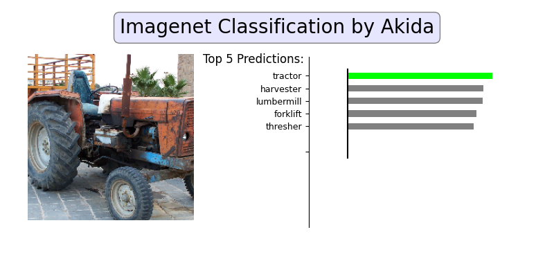

<!DOCTYPE html>
<html class="writer-html5" lang="en" >
<head>
  <meta charset="utf-8">
  
  <meta name="viewport" content="width=device-width, initial-scale=1.0">
  
  <title>MobileNet/ImageNet inference &mdash; Akida Examples  documentation</title>
  

  
  <link rel="stylesheet" href="../../_static/css/theme.css" type="text/css" />
  <link rel="stylesheet" href="../../_static/pygments.css" type="text/css" />
  <link rel="stylesheet" href="../../_static/gallery.css" type="text/css" />
  <link rel="stylesheet" href="../../_static/gallery-binder.css" type="text/css" />
  <link rel="stylesheet" href="../../_static/gallery-dataframe.css" type="text/css" />

  
  
    <link rel="shortcut icon" href="../../_static/favicon.ico"/>
  
  
  

  
  <!--[if lt IE 9]>
    <script src="../../_static/js/html5shiv.min.js"></script>
  <![endif]-->
  
    
      <script type="text/javascript" id="documentation_options" data-url_root="../../" src="../../_static/documentation_options.js"></script>
        <script src="../../_static/jquery.js"></script>
        <script src="../../_static/underscore.js"></script>
        <script src="../../_static/doctools.js"></script>
        <script src="../../_static/language_data.js"></script>
    
    <script type="text/javascript" src="../../_static/js/theme.js"></script>

    
    <link rel="index" title="Index" href="../../genindex.html" />
    <link rel="search" title="Search" href="../../search.html" />
    <link rel="next" title="DS-CNN/KWS inference" href="plot_3_ds_cnn_kws.html" />
    <link rel="prev" title="DS-CNN CIFAR10 inference" href="plot_1_ds_cnn_cifar10.html" /> 
</head>

<body class="wy-body-for-nav">

   
  <div class="wy-grid-for-nav">
    
    <nav data-toggle="wy-nav-shift" class="wy-nav-side">
      <div class="wy-side-scroll">
        <div class="wy-side-nav-search"  style="background: #3f51b5" >
          

          
            <a href="../../index.html">
          

          
            
            
          
          </a>

          
            
            
              <div class="version">
                Akida 1.8.10
              </div>
            
          

          
<div role="search">
  <form id="rtd-search-form" class="wy-form" action="../../search.html" method="get">
    <input type="text" name="q" placeholder="Search docs" />
    <input type="hidden" name="check_keywords" value="yes" />
    <input type="hidden" name="area" value="default" />
  </form>
</div>

          
        </div>

        
        <div class="wy-menu wy-menu-vertical" data-spy="affix" role="navigation" aria-label="main navigation">
          
            
            
              
            
            
              <ul class="current">
<li class="toctree-l1"><a class="reference internal" href="../../index.html">Overview</a></li>
<li class="toctree-l1"><a class="reference internal" href="../../installation.html">Installation</a><ul>
<li class="toctree-l2"><a class="reference internal" href="../../installation.html#requirements">Requirements</a></li>
<li class="toctree-l2"><a class="reference internal" href="../../installation.html#quick-installation">Quick installation</a></li>
<li class="toctree-l2"><a class="reference internal" href="../../installation.html#running-examples">Running examples</a></li>
</ul>
</li>
<li class="toctree-l1"><a class="reference internal" href="../../user_guide/user_guide.html">User guide</a><ul>
<li class="toctree-l2"><a class="reference internal" href="../../user_guide/getting_started.html">Getting started</a><ul>
<li class="toctree-l3"><a class="reference internal" href="../../user_guide/getting_started.html#for-beginners">For beginners</a></li>
<li class="toctree-l3"><a class="reference internal" href="../../user_guide/getting_started.html#for-users-familiar-with-deep-learning">For users familiar with deep-learning</a></li>
</ul>
</li>
<li class="toctree-l2"><a class="reference internal" href="../../user_guide/aee.html">Akida user guide</a><ul>
<li class="toctree-l3"><a class="reference internal" href="../../user_guide/aee.html#the-akida-execution-engine">The Akida Execution Engine</a><ul>
<li class="toctree-l4"><a class="reference internal" href="../../user_guide/aee.html#id1">1. The Spiking Neural Network model</a></li>
<li class="toctree-l4"><a class="reference internal" href="../../user_guide/aee.html#id2">2. Input data format</a></li>
<li class="toctree-l4"><a class="reference internal" href="../../user_guide/aee.html#id3">3. Determine training mode</a></li>
<li class="toctree-l4"><a class="reference internal" href="../../user_guide/aee.html#id4">4. Interpreting outputs</a></li>
</ul>
</li>
<li class="toctree-l3"><a class="reference internal" href="../../user_guide/aee.html#neural-network-model">Neural Network model</a><ul>
<li class="toctree-l4"><a class="reference internal" href="../../user_guide/aee.html#specifying-the-neural-network-model">Specifying the Neural Network model</a></li>
<li class="toctree-l4"><a class="reference internal" href="../../user_guide/aee.html#saving-and-loading">Saving and loading</a></li>
<li class="toctree-l4"><a class="reference internal" href="../../user_guide/aee.html#input-layer-types">Input layer types</a></li>
<li class="toctree-l4"><a class="reference internal" href="../../user_guide/aee.html#data-processing-layer-types">Data-Processing layer types</a></li>
</ul>
</li>
<li class="toctree-l3"><a class="reference internal" href="../../user_guide/aee.html#id5">Using Akida Unsupervised Learning</a><ul>
<li class="toctree-l4"><a class="reference internal" href="../../user_guide/aee.html#learning-constraints">Learning constraints</a></li>
<li class="toctree-l4"><a class="reference internal" href="../../user_guide/aee.html#compiling-a-layer">Compiling a layer</a></li>
<li class="toctree-l4"><a class="reference internal" href="../../user_guide/aee.html#id6">Learning parameters</a></li>
</ul>
</li>
</ul>
</li>
<li class="toctree-l2"><a class="reference internal" href="../../user_guide/cnn2snn.html">CNN2SNN toolkit</a><ul>
<li class="toctree-l3"><a class="reference internal" href="../../user_guide/cnn2snn.html#overview">Overview</a><ul>
<li class="toctree-l4"><a class="reference internal" href="../../user_guide/cnn2snn.html#conversion-workflow">Conversion workflow</a></li>
<li class="toctree-l4"><a class="reference internal" href="../../user_guide/cnn2snn.html#typical-training-scenario">Typical training scenario</a></li>
<li class="toctree-l4"><a class="reference internal" href="../../user_guide/cnn2snn.html#design-compatibility-constraints">Design compatibility constraints</a></li>
<li class="toctree-l4"><a class="reference internal" href="../../user_guide/cnn2snn.html#quantization-compatibility-constraints">Quantization compatibility constraints</a></li>
<li class="toctree-l4"><a class="reference internal" href="../../user_guide/cnn2snn.html#command-line-interface">Command-line interface</a></li>
</ul>
</li>
<li class="toctree-l3"><a class="reference internal" href="../../user_guide/cnn2snn.html#layers-considerations">Layers Considerations</a><ul>
<li class="toctree-l4"><a class="reference internal" href="../../user_guide/cnn2snn.html#supported-layer-types">Supported layer types</a></li>
<li class="toctree-l4"><a class="reference internal" href="../../user_guide/cnn2snn.html#cnn2snn-quantization-aware-layers">CNN2SNN Quantization-aware layers</a></li>
<li class="toctree-l4"><a class="reference internal" href="../../user_guide/cnn2snn.html#training-only-layers">Training-Only Layers</a></li>
<li class="toctree-l4"><a class="reference internal" href="../../user_guide/cnn2snn.html#first-layers">First Layers</a></li>
<li class="toctree-l4"><a class="reference internal" href="../../user_guide/cnn2snn.html#id6">Final Layers</a></li>
</ul>
</li>
<li class="toctree-l3"><a class="reference internal" href="../../user_guide/cnn2snn.html#tips-and-tricks">Tips and Tricks</a></li>
</ul>
</li>
<li class="toctree-l2"><a class="reference internal" href="../../user_guide/akida_models.html">Akida models zoo</a><ul>
<li class="toctree-l3"><a class="reference internal" href="../../user_guide/akida_models.html#overview">Overview</a></li>
<li class="toctree-l3"><a class="reference internal" href="../../user_guide/akida_models.html#command-line-interface-for-model-creation">Command-line interface for model creation</a></li>
<li class="toctree-l3"><a class="reference internal" href="../../user_guide/akida_models.html#command-line-interface-for-model-training">Command-line interface for model training</a><ul>
<li class="toctree-l4"><a class="reference internal" href="../../user_guide/akida_models.html#cifar10-training-and-tuning">CIFAR10 training and tuning</a></li>
<li class="toctree-l4"><a class="reference internal" href="../../user_guide/akida_models.html#utk-face-training">UTK Face training</a></li>
<li class="toctree-l4"><a class="reference internal" href="../../user_guide/akida_models.html#kws-training">KWS training</a></li>
<li class="toctree-l4"><a class="reference internal" href="../../user_guide/akida_models.html#yolo-training">YOLO training</a></li>
</ul>
</li>
<li class="toctree-l3"><a class="reference internal" href="../../user_guide/akida_models.html#id1">Layer Blocks</a><ul>
<li class="toctree-l4"><a class="reference internal" href="../../user_guide/akida_models.html#conv-block"><code class="docutils literal notranslate"><span class="pre">conv_block</span></code></a></li>
<li class="toctree-l4"><a class="reference internal" href="../../user_guide/akida_models.html#dense-block"><code class="docutils literal notranslate"><span class="pre">dense_block</span></code></a></li>
<li class="toctree-l4"><a class="reference internal" href="../../user_guide/akida_models.html#separable-conv-block"><code class="docutils literal notranslate"><span class="pre">separable_conv_block</span></code></a></li>
</ul>
</li>
</ul>
</li>
<li class="toctree-l2"><a class="reference internal" href="../../user_guide/hw_constraints.html">Hardware constraints</a><ul>
<li class="toctree-l3"><a class="reference internal" href="../../user_guide/hw_constraints.html#akida-nsoc-pre-production">Akida NSoC (Pre-production)</a><ul>
<li class="toctree-l4"><a class="reference internal" href="../../user_guide/hw_constraints.html#inputconvolutional">InputConvolutional</a></li>
<li class="toctree-l4"><a class="reference internal" href="../../user_guide/hw_constraints.html#convolutional">Convolutional</a></li>
<li class="toctree-l4"><a class="reference internal" href="../../user_guide/hw_constraints.html#separableconvolutional">SeparableConvolutional</a></li>
<li class="toctree-l4"><a class="reference internal" href="../../user_guide/hw_constraints.html#fullyconnected">FullyConnected</a></li>
</ul>
</li>
<li class="toctree-l3"><a class="reference internal" href="../../user_guide/hw_constraints.html#akida-nsoc-production">Akida NSoC (Production)</a><ul>
<li class="toctree-l4"><a class="reference internal" href="../../user_guide/hw_constraints.html#id1">InputConvolutional</a></li>
<li class="toctree-l4"><a class="reference internal" href="../../user_guide/hw_constraints.html#id2">Convolutional</a></li>
<li class="toctree-l4"><a class="reference internal" href="../../user_guide/hw_constraints.html#id3">SeparableConvolutional</a></li>
<li class="toctree-l4"><a class="reference internal" href="../../user_guide/hw_constraints.html#id4">FullyConnected</a></li>
</ul>
</li>
</ul>
</li>
<li class="toctree-l2"><a class="reference internal" href="../../user_guide/compatibility.html">Akida versions compatibility</a><ul>
<li class="toctree-l3"><a class="reference internal" href="../../user_guide/compatibility.html#upgrading-models-with-legacy-quantizers">Upgrading models with legacy quantizers</a></li>
</ul>
</li>
</ul>
</li>
<li class="toctree-l1"><a class="reference internal" href="../../api_reference/api_reference.html">API reference</a><ul>
<li class="toctree-l2"><a class="reference internal" href="../../api_reference/aee_apis.html">Akida Execution Engine</a><ul>
<li class="toctree-l3"><a class="reference internal" href="../../api_reference/aee_apis.html#model">Model</a></li>
<li class="toctree-l3"><a class="reference internal" href="../../api_reference/aee_apis.html#layer">Layer</a></li>
<li class="toctree-l3"><a class="reference internal" href="../../api_reference/aee_apis.html#layerstatistics">LayerStatistics</a></li>
<li class="toctree-l3"><a class="reference internal" href="../../api_reference/aee_apis.html#observer">Observer</a></li>
<li class="toctree-l3"><a class="reference internal" href="../../api_reference/aee_apis.html#inputdata">InputData</a></li>
<li class="toctree-l3"><a class="reference internal" href="../../api_reference/aee_apis.html#inputconvolutional">InputConvolutional</a></li>
<li class="toctree-l3"><a class="reference internal" href="../../api_reference/aee_apis.html#fullyconnected">FullyConnected</a></li>
<li class="toctree-l3"><a class="reference internal" href="../../api_reference/aee_apis.html#convolutional">Convolutional</a></li>
<li class="toctree-l3"><a class="reference internal" href="../../api_reference/aee_apis.html#separableconvolutional">SeparableConvolutional</a></li>
<li class="toctree-l3"><a class="reference internal" href="../../api_reference/aee_apis.html#dense">Dense</a></li>
<li class="toctree-l3"><a class="reference internal" href="../../api_reference/aee_apis.html#sparse">Sparse</a></li>
<li class="toctree-l3"><a class="reference internal" href="../../api_reference/aee_apis.html#coords-to-sparse">coords_to_sparse</a></li>
<li class="toctree-l3"><a class="reference internal" href="../../api_reference/aee_apis.html#dense-to-sparse">dense_to_sparse</a></li>
<li class="toctree-l3"><a class="reference internal" href="../../api_reference/aee_apis.html#packetize">packetize</a></li>
<li class="toctree-l3"><a class="reference internal" href="../../api_reference/aee_apis.html#backend">Backend</a></li>
<li class="toctree-l3"><a class="reference internal" href="../../api_reference/aee_apis.html#convolutionmode">ConvolutionMode</a></li>
<li class="toctree-l3"><a class="reference internal" href="../../api_reference/aee_apis.html#poolingtype">PoolingType</a></li>
<li class="toctree-l3"><a class="reference internal" href="../../api_reference/aee_apis.html#learningtype">LearningType</a></li>
<li class="toctree-l3"><a class="reference internal" href="../../api_reference/aee_apis.html#compatibility">Compatibility</a></li>
</ul>
</li>
<li class="toctree-l2"><a class="reference internal" href="../../api_reference/cnn2snn_apis.html">CNN2SNN</a><ul>
<li class="toctree-l3"><a class="reference internal" href="../../api_reference/cnn2snn_apis.html#tool-functions">Tool functions</a><ul>
<li class="toctree-l4"><a class="reference internal" href="../../api_reference/cnn2snn_apis.html#quantize">quantize</a></li>
<li class="toctree-l4"><a class="reference internal" href="../../api_reference/cnn2snn_apis.html#quantize-layer">quantize_layer</a></li>
<li class="toctree-l4"><a class="reference internal" href="../../api_reference/cnn2snn_apis.html#convert">convert</a></li>
<li class="toctree-l4"><a class="reference internal" href="../../api_reference/cnn2snn_apis.html#check-model-compatibility">check_model_compatibility</a></li>
<li class="toctree-l4"><a class="reference internal" href="../../api_reference/cnn2snn_apis.html#load-quantized-model">load_quantized_model</a></li>
<li class="toctree-l4"><a class="reference internal" href="../../api_reference/cnn2snn_apis.html#load-partial-weights">load_partial_weights</a></li>
</ul>
</li>
<li class="toctree-l3"><a class="reference internal" href="../../api_reference/cnn2snn_apis.html#quantizers">Quantizers</a><ul>
<li class="toctree-l4"><a class="reference internal" href="../../api_reference/cnn2snn_apis.html#weightquantizer">WeightQuantizer</a></li>
<li class="toctree-l4"><a class="reference internal" href="../../api_reference/cnn2snn_apis.html#linearweightquantizer">LinearWeightQuantizer</a></li>
<li class="toctree-l4"><a class="reference internal" href="../../api_reference/cnn2snn_apis.html#stdweightquantizer">StdWeightQuantizer</a></li>
<li class="toctree-l4"><a class="reference internal" href="../../api_reference/cnn2snn_apis.html#trainablestdweightquantizer">TrainableStdWeightQuantizer</a></li>
<li class="toctree-l4"><a class="reference internal" href="../../api_reference/cnn2snn_apis.html#maxquantizer">MaxQuantizer</a></li>
<li class="toctree-l4"><a class="reference internal" href="../../api_reference/cnn2snn_apis.html#maxperaxisquantizer">MaxPerAxisQuantizer</a></li>
<li class="toctree-l4"><a class="reference internal" href="../../api_reference/cnn2snn_apis.html#weightfloat">WeightFloat</a></li>
</ul>
</li>
<li class="toctree-l3"><a class="reference internal" href="../../api_reference/cnn2snn_apis.html#quantized-layers">Quantized layers</a><ul>
<li class="toctree-l4"><a class="reference internal" href="../../api_reference/cnn2snn_apis.html#quantizedconv2d">QuantizedConv2D</a></li>
<li class="toctree-l4"><a class="reference internal" href="../../api_reference/cnn2snn_apis.html#quantizeddepthwiseconv2d">QuantizedDepthwiseConv2D</a></li>
<li class="toctree-l4"><a class="reference internal" href="../../api_reference/cnn2snn_apis.html#quantizeddense">QuantizedDense</a></li>
<li class="toctree-l4"><a class="reference internal" href="../../api_reference/cnn2snn_apis.html#quantizedseparableconv2d">QuantizedSeparableConv2D</a></li>
<li class="toctree-l4"><a class="reference internal" href="../../api_reference/cnn2snn_apis.html#quantizedactivation">QuantizedActivation</a></li>
<li class="toctree-l4"><a class="reference internal" href="../../api_reference/cnn2snn_apis.html#activationdiscreterelu">ActivationDiscreteRelu</a></li>
<li class="toctree-l4"><a class="reference internal" href="../../api_reference/cnn2snn_apis.html#quantizedrelu">QuantizedReLU</a></li>
</ul>
</li>
</ul>
</li>
<li class="toctree-l2"><a class="reference internal" href="../../api_reference/akida_models_apis.html">Akida models</a><ul>
<li class="toctree-l3"><a class="reference internal" href="../../api_reference/akida_models_apis.html#layer-blocks">Layer blocks</a><ul>
<li class="toctree-l4"><a class="reference internal" href="../../api_reference/akida_models_apis.html#conv-block">conv_block</a></li>
<li class="toctree-l4"><a class="reference internal" href="../../api_reference/akida_models_apis.html#separable-conv-block">separable_conv_block</a></li>
<li class="toctree-l4"><a class="reference internal" href="../../api_reference/akida_models_apis.html#dense-block">dense_block</a></li>
</ul>
</li>
<li class="toctree-l3"><a class="reference internal" href="../../api_reference/akida_models_apis.html#model-zoo">Model zoo</a><ul>
<li class="toctree-l4"><a class="reference internal" href="../../api_reference/akida_models_apis.html#mobilenet">Mobilenet</a></li>
<li class="toctree-l4"><a class="reference internal" href="../../api_reference/akida_models_apis.html#ds-cnn">DS-CNN</a></li>
<li class="toctree-l4"><a class="reference internal" href="../../api_reference/akida_models_apis.html#vgg">VGG</a></li>
<li class="toctree-l4"><a class="reference internal" href="../../api_reference/akida_models_apis.html#yolo">YOLO</a></li>
</ul>
</li>
</ul>
</li>
</ul>
</li>
<li class="toctree-l1 current"><a class="reference internal" href="../index.html">Examples</a><ul class="current">
<li class="toctree-l2 current"><a class="reference internal" href="../index.html#general-examples">General examples</a><ul class="current">
<li class="toctree-l3"><a class="reference internal" href="plot_0_gxnor_mnist.html">GXNOR/MNIST inference</a><ul>
<li class="toctree-l4"><a class="reference internal" href="plot_0_gxnor_mnist.html#dataset-preparation">1. Dataset preparation</a></li>
<li class="toctree-l4"><a class="reference internal" href="plot_0_gxnor_mnist.html#load-the-pre-trained-akida-model">2. Load the pre-trained Akida model</a></li>
<li class="toctree-l4"><a class="reference internal" href="plot_0_gxnor_mnist.html#show-predictions-for-a-single-image">3. Show predictions for a single image</a></li>
<li class="toctree-l4"><a class="reference internal" href="plot_0_gxnor_mnist.html#check-performance">4. Check performance</a></li>
</ul>
</li>
<li class="toctree-l3"><a class="reference internal" href="plot_1_ds_cnn_cifar10.html">DS-CNN CIFAR10 inference</a><ul>
<li class="toctree-l4"><a class="reference internal" href="plot_1_ds_cnn_cifar10.html#dataset-preparation">1. Dataset preparation</a></li>
<li class="toctree-l4"><a class="reference internal" href="plot_1_ds_cnn_cifar10.html#create-a-keras-ds-cnn-model">2. Create a Keras DS-CNN model</a></li>
<li class="toctree-l4"><a class="reference internal" href="plot_1_ds_cnn_cifar10.html#quantized-model">3. Quantized model</a></li>
<li class="toctree-l4"><a class="reference internal" href="plot_1_ds_cnn_cifar10.html#pretrained-quantized-model">4. Pretrained quantized model</a></li>
<li class="toctree-l4"><a class="reference internal" href="plot_1_ds_cnn_cifar10.html#conversion-to-akida">5. Conversion to Akida</a></li>
</ul>
</li>
<li class="toctree-l3 current"><a class="current reference internal" href="#">MobileNet/ImageNet inference</a><ul>
<li class="toctree-l4"><a class="reference internal" href="#dataset-preparation">1. Dataset preparation</a></li>
<li class="toctree-l4"><a class="reference internal" href="#create-a-keras-mobilenet-model">2. Create a Keras MobileNet model</a></li>
<li class="toctree-l4"><a class="reference internal" href="#quantized-model">3. Quantized model</a></li>
<li class="toctree-l4"><a class="reference internal" href="#pretrained-quantized-model">4. Pretrained quantized model</a></li>
<li class="toctree-l4"><a class="reference internal" href="#conversion-to-akida">5. Conversion to Akida</a></li>
</ul>
</li>
<li class="toctree-l3"><a class="reference internal" href="plot_3_ds_cnn_kws.html">DS-CNN/KWS inference</a><ul>
<li class="toctree-l4"><a class="reference internal" href="plot_3_ds_cnn_kws.html#load-the-preprocessed-dataset">1. Load the preprocessed dataset</a></li>
<li class="toctree-l4"><a class="reference internal" href="plot_3_ds_cnn_kws.html#load-a-pre-trained-native-keras-model">2. Load a pre-trained native Keras model</a></li>
<li class="toctree-l4"><a class="reference internal" href="plot_3_ds_cnn_kws.html#load-a-pre-trained-quantized-keras-model-satisfying-akida-nsoc-requirements">3. Load a pre-trained quantized Keras model satisfying Akida NSoC requirements</a></li>
<li class="toctree-l4"><a class="reference internal" href="plot_3_ds_cnn_kws.html#conversion-to-akida">4. Conversion to Akida</a></li>
</ul>
</li>
<li class="toctree-l3"><a class="reference internal" href="plot_4_regression.html">Regression tutorial</a><ul>
<li class="toctree-l4"><a class="reference internal" href="plot_4_regression.html#load-the-dataset">1. Load the dataset</a></li>
<li class="toctree-l4"><a class="reference internal" href="plot_4_regression.html#load-a-pre-trained-native-keras-model">2. Load a pre-trained native Keras model</a></li>
<li class="toctree-l4"><a class="reference internal" href="plot_4_regression.html#load-a-pre-trained-quantized-keras-model-satisfying-akida-nsoc-requirements">3. Load a pre-trained quantized Keras model satisfying Akida NSoC requirements</a></li>
<li class="toctree-l4"><a class="reference internal" href="plot_4_regression.html#conversion-to-akida">4. Conversion to Akida</a></li>
<li class="toctree-l4"><a class="reference internal" href="plot_4_regression.html#estimate-age-on-a-single-image">5. Estimate age on a single image</a></li>
</ul>
</li>
<li class="toctree-l3"><a class="reference internal" href="plot_5_transfer_learning.html">Transfer learning with MobileNet for cats vs. dogs</a><ul>
<li class="toctree-l4"><a class="reference internal" href="plot_5_transfer_learning.html#transfer-learning-process">Transfer learning process</a></li>
<li class="toctree-l4"><a class="reference internal" href="plot_5_transfer_learning.html#load-and-preprocess-data">1. Load and preprocess data</a></li>
<li class="toctree-l4"><a class="reference internal" href="plot_5_transfer_learning.html#modify-a-pre-trained-base-keras-model">2. Modify a pre-trained base Keras model</a></li>
<li class="toctree-l4"><a class="reference internal" href="plot_5_transfer_learning.html#train-the-transferred-model-for-the-new-task">3. Train the transferred model for the new task</a></li>
<li class="toctree-l4"><a class="reference internal" href="plot_5_transfer_learning.html#quantize-the-top-layer">4 Quantize the top layer</a></li>
<li class="toctree-l4"><a class="reference internal" href="plot_5_transfer_learning.html#convert-to-akida">5. Convert to Akida</a></li>
<li class="toctree-l4"><a class="reference internal" href="plot_5_transfer_learning.html#plot-confusion-matrix">6. Plot confusion matrix</a></li>
</ul>
</li>
<li class="toctree-l3"><a class="reference internal" href="plot_6_voc_yolo_detection.html">YOLO/PASCAL-VOC detection tutorial</a><ul>
<li class="toctree-l4"><a class="reference internal" href="plot_6_voc_yolo_detection.html#introduction">1. Introduction</a></li>
<li class="toctree-l4"><a class="reference internal" href="plot_6_voc_yolo_detection.html#preprocessing-tools">2. Preprocessing tools</a></li>
<li class="toctree-l4"><a class="reference internal" href="plot_6_voc_yolo_detection.html#model-architecture">3. Model architecture</a></li>
<li class="toctree-l4"><a class="reference internal" href="plot_6_voc_yolo_detection.html#training">4. Training</a></li>
<li class="toctree-l4"><a class="reference internal" href="plot_6_voc_yolo_detection.html#performance">5. Performance</a></li>
<li class="toctree-l4"><a class="reference internal" href="plot_6_voc_yolo_detection.html#conversion-to-akida">6. Conversion to Akida</a></li>
</ul>
</li>
</ul>
</li>
<li class="toctree-l2"><a class="reference internal" href="../index.html#cnn2snn-tutorials">CNN2SNN tutorials</a><ul>
<li class="toctree-l3"><a class="reference internal" href="../cnn2snn/plot_0_cnn_flow.html">CNN conversion flow tutorial</a><ul>
<li class="toctree-l4"><a class="reference internal" href="../cnn2snn/plot_0_cnn_flow.html#load-and-reshape-mnist-dataset">1. Load and reshape MNIST dataset</a></li>
<li class="toctree-l4"><a class="reference internal" href="../cnn2snn/plot_0_cnn_flow.html#model-definition">2. Model definition</a></li>
<li class="toctree-l4"><a class="reference internal" href="../cnn2snn/plot_0_cnn_flow.html#model-quantization">4. Model quantization</a></li>
<li class="toctree-l4"><a class="reference internal" href="../cnn2snn/plot_0_cnn_flow.html#model-fine-tuning-quantization-aware-training">5. Model fine tuning (quantization-aware training)</a></li>
<li class="toctree-l4"><a class="reference internal" href="../cnn2snn/plot_0_cnn_flow.html#model-conversion">6. Model conversion</a></li>
</ul>
</li>
<li class="toctree-l3"><a class="reference internal" href="../cnn2snn/plot_1_advanced_cnn2snn.html">Advanced CNN2SNN tutorial</a><ul>
<li class="toctree-l4"><a class="reference internal" href="../cnn2snn/plot_1_advanced_cnn2snn.html#design-a-cnn2snn-quantized-model">1. Design a CNN2SNN quantized model</a></li>
<li class="toctree-l4"><a class="reference internal" href="../cnn2snn/plot_1_advanced_cnn2snn.html#weight-quantizer-details">2. Weight Quantizer Details</a></li>
<li class="toctree-l4"><a class="reference internal" href="../cnn2snn/plot_1_advanced_cnn2snn.html#quantized-activation-layer-details">3. Quantized Activation Layer Details</a></li>
</ul>
</li>
</ul>
</li>
<li class="toctree-l2"><a class="reference internal" href="../index.html#edge-examples">Edge examples</a><ul>
<li class="toctree-l3"><a class="reference internal" href="../edge/plot_0_edge_learning_vision.html">Akida vision edge learning</a><ul>
<li class="toctree-l4"><a class="reference internal" href="../edge/plot_0_edge_learning_vision.html#dataset-preparation">1. Dataset preparation</a></li>
<li class="toctree-l4"><a class="reference internal" href="../edge/plot_0_edge_learning_vision.html#prepare-akida-model-for-learning">2. Prepare Akida model for learning</a></li>
<li class="toctree-l4"><a class="reference internal" href="../edge/plot_0_edge_learning_vision.html#edge-learning-with-akida">3. Edge learning with Akida</a></li>
</ul>
</li>
<li class="toctree-l3"><a class="reference internal" href="../edge/plot_1_edge_learning_kws.html">Akida edge learning for keyword spotting</a><ul>
<li class="toctree-l4"><a class="reference internal" href="../edge/plot_1_edge_learning_kws.html#edge-learning-process">1. Edge learning process</a></li>
<li class="toctree-l4"><a class="reference internal" href="../edge/plot_1_edge_learning_kws.html#dataset-preparation">2. Dataset preparation</a></li>
<li class="toctree-l4"><a class="reference internal" href="../edge/plot_1_edge_learning_kws.html#prepare-akida-model-for-learning">3. Prepare Akida model for learning</a></li>
<li class="toctree-l4"><a class="reference internal" href="../edge/plot_1_edge_learning_kws.html#learn-with-akida-using-the-training-set">4. Learn with Akida using the training set</a></li>
<li class="toctree-l4"><a class="reference internal" href="../edge/plot_1_edge_learning_kws.html#edge-learning">4. Edge learning</a></li>
</ul>
</li>
<li class="toctree-l3"><a class="reference internal" href="../edge/plot_2_edge_learning_parameters.html">Tips to set Akida learning parameters</a><ul>
<li class="toctree-l4"><a class="reference internal" href="../edge/plot_2_edge_learning_parameters.html#akida-learning-parameters">1. Akida learning parameters</a></li>
<li class="toctree-l4"><a class="reference internal" href="../edge/plot_2_edge_learning_parameters.html#create-akida-model">2. Create Akida model</a></li>
<li class="toctree-l4"><a class="reference internal" href="../edge/plot_2_edge_learning_parameters.html#estimate-the-required-number-of-weights-of-the-trainable-layer">3. Estimate the required number of weights of the trainable layer</a></li>
<li class="toctree-l4"><a class="reference internal" href="../edge/plot_2_edge_learning_parameters.html#estimate-the-number-of-neurons-per-class">4. Estimate the number of neurons per class</a></li>
</ul>
</li>
</ul>
</li>
</ul>
</li>
<li class="toctree-l1"><a class="reference external" href="https://github.com/Brainchip-Inc/akida_examples/releases">Changelog</a></li>
<li class="toctree-l1"><a class="reference external" href="https://support.brainchip.com/portal/home">Support</a></li>
<li class="toctree-l1"><a class="reference internal" href="../../license.html">License</a></li>
</ul>

            
          
        </div>
        
      </div>
    </nav>

    <section data-toggle="wy-nav-shift" class="wy-nav-content-wrap">

      
      <nav class="wy-nav-top" aria-label="top navigation">
        
          <i data-toggle="wy-nav-top" class="fa fa-bars"></i>
          <a href="../../index.html">Akida Examples</a>
        
      </nav>


      <div class="wy-nav-content">
        
        <div class="rst-content">
        
          


<div role="navigation" aria-label="breadcrumbs navigation">

  <ul class="wy-breadcrumbs">
    
      <li><a href="../../index.html" class="icon icon-home"></a> &raquo;</li>
        
          <li><a href="../index.html">Akida examples</a> &raquo;</li>
        
      <li>MobileNet/ImageNet inference</li>
    
    
      <li class="wy-breadcrumbs-aside">
        
            
        
      </li>
    
  </ul>

  
  <hr/>
</div>
          <div role="main" class="document" itemscope="itemscope" itemtype="http://schema.org/Article">
           <div itemprop="articleBody">
            
  <div class="sphx-glr-download-link-note admonition note">
<p class="admonition-title">Note</p>
<p>Click <a class="reference internal" href="#sphx-glr-download-examples-general-plot-2-mobilenet-imagenet-py"><span class="std std-ref">here</span></a>     to download the full example code</p>
</div>
<div class="sphx-glr-example-title section" id="mobilenet-imagenet-inference">
<span id="sphx-glr-examples-general-plot-2-mobilenet-imagenet-py"></span><h1>MobileNet/ImageNet inference<a class="headerlink" href="#mobilenet-imagenet-inference" title="Permalink to this headline">¶</a></h1>
<p>This CNN2SNN tutorial presents how to convert a MobileNet pre-trained
model into Akida.</p>
<p>As ImageNet images are not publicly available, performances
are assessed using a set of 10 copyright free images that were found on Google
using ImageNet class names.</p>
<div class="section" id="dataset-preparation">
<h2>1. Dataset preparation<a class="headerlink" href="#dataset-preparation" title="Permalink to this headline">¶</a></h2>
<p>Test images all have at least 256 pixels in the smallest dimension. They must
be preprocessed to fit in the model. The
<code class="docutils literal notranslate"><span class="pre">imagenet.preprocessing.resize_and_crop</span></code> function decodes, crops and
extracts a square 224x224x3 patch from an input image.</p>
<div class="admonition note">
<p class="admonition-title">Note</p>
<p>Input size is here set to 224x224x3 as this is what is used by the
model presented in the next section.</p>
</div>
<div class="highlight-default notranslate"><div class="highlight"><pre><span></span><span class="kn">import</span> <span class="nn">os</span>
<span class="kn">import</span> <span class="nn">numpy</span> <span class="k">as</span> <span class="nn">np</span>

<span class="kn">from</span> <span class="nn">tensorflow.io</span> <span class="kn">import</span> <span class="n">read_file</span>
<span class="kn">from</span> <span class="nn">tensorflow.keras.utils</span> <span class="kn">import</span> <span class="n">get_file</span>

<span class="kn">from</span> <span class="nn">akida_models.imagenet</span> <span class="kn">import</span> <span class="n">preprocessing</span>

<span class="c1"># Model specification and hyperparameters</span>
<span class="n">NUM_CHANNELS</span> <span class="o">=</span> <span class="mi">3</span>
<span class="n">IMAGE_SIZE</span> <span class="o">=</span> <span class="mi">224</span>
<span class="n">NUM_CLASSES</span> <span class="o">=</span> <span class="mi">1000</span>

<span class="n">num_images</span> <span class="o">=</span> <span class="mi">10</span>

<span class="c1"># Retrieve dataset file from Brainchip data server</span>
<span class="n">file_path</span> <span class="o">=</span> <span class="n">get_file</span><span class="p">(</span>
    <span class="s2">&quot;imagenet_like.zip&quot;</span><span class="p">,</span>
    <span class="s2">&quot;http://data.brainchip.com/dataset-mirror/imagenet_like/imagenet_like.zip&quot;</span><span class="p">,</span>
    <span class="n">cache_subdir</span><span class="o">=</span><span class="s1">&#39;datasets/imagenet_like&#39;</span><span class="p">,</span>
    <span class="n">extract</span><span class="o">=</span><span class="kc">True</span><span class="p">)</span>
<span class="n">data_folder</span> <span class="o">=</span> <span class="n">os</span><span class="o">.</span><span class="n">path</span><span class="o">.</span><span class="n">dirname</span><span class="p">(</span><span class="n">file_path</span><span class="p">)</span>

<span class="c1"># Load images for test set</span>
<span class="n">x_test_files</span> <span class="o">=</span> <span class="p">[]</span>
<span class="n">x_test</span> <span class="o">=</span> <span class="n">np</span><span class="o">.</span><span class="n">zeros</span><span class="p">((</span><span class="n">num_images</span><span class="p">,</span> <span class="mi">224</span><span class="p">,</span> <span class="mi">224</span><span class="p">,</span> <span class="mi">3</span><span class="p">))</span><span class="o">.</span><span class="n">astype</span><span class="p">(</span><span class="s1">&#39;uint8&#39;</span><span class="p">)</span>
<span class="k">for</span> <span class="nb">id</span> <span class="ow">in</span> <span class="nb">range</span><span class="p">(</span><span class="n">num_images</span><span class="p">):</span>
    <span class="n">test_file</span> <span class="o">=</span> <span class="s1">&#39;image_&#39;</span> <span class="o">+</span> <span class="nb">str</span><span class="p">(</span><span class="nb">id</span> <span class="o">+</span> <span class="mi">1</span><span class="p">)</span><span class="o">.</span><span class="n">zfill</span><span class="p">(</span><span class="mi">2</span><span class="p">)</span> <span class="o">+</span> <span class="s1">&#39;.jpg&#39;</span>
    <span class="n">x_test_files</span><span class="o">.</span><span class="n">append</span><span class="p">(</span><span class="n">test_file</span><span class="p">)</span>
    <span class="n">img_path</span> <span class="o">=</span> <span class="n">os</span><span class="o">.</span><span class="n">path</span><span class="o">.</span><span class="n">join</span><span class="p">(</span><span class="n">data_folder</span><span class="p">,</span> <span class="n">test_file</span><span class="p">)</span>
    <span class="n">base_image</span> <span class="o">=</span> <span class="n">read_file</span><span class="p">(</span><span class="n">img_path</span><span class="p">)</span>
    <span class="n">image</span> <span class="o">=</span> <span class="n">preprocessing</span><span class="o">.</span><span class="n">resize_and_crop</span><span class="p">(</span><span class="n">image_buffer</span><span class="o">=</span><span class="n">base_image</span><span class="p">,</span>
                                          <span class="n">output_width</span><span class="o">=</span><span class="n">IMAGE_SIZE</span><span class="p">,</span>
                                          <span class="n">output_height</span><span class="o">=</span><span class="n">IMAGE_SIZE</span><span class="p">,</span>
                                          <span class="n">num_channels</span><span class="o">=</span><span class="n">NUM_CHANNELS</span><span class="p">)</span>
    <span class="n">x_test</span><span class="p">[</span><span class="nb">id</span><span class="p">,</span> <span class="p">:,</span> <span class="p">:,</span> <span class="p">:]</span> <span class="o">=</span> <span class="n">np</span><span class="o">.</span><span class="n">expand_dims</span><span class="p">(</span><span class="n">image</span><span class="p">,</span> <span class="n">axis</span><span class="o">=</span><span class="mi">0</span><span class="p">)</span>

<span class="c1"># Rescale images for Keras model (normalization between -1 and 1)</span>
<span class="c1"># Assume rescaling format of (x - b)/a</span>
<span class="n">a</span> <span class="o">=</span> <span class="mi">128</span>
<span class="n">b</span> <span class="o">=</span> <span class="mi">128</span>
<span class="n">input_scaling</span> <span class="o">=</span> <span class="p">(</span><span class="n">a</span><span class="p">,</span> <span class="n">b</span><span class="p">)</span>
<span class="n">x_test_preprocess</span> <span class="o">=</span> <span class="p">(</span><span class="n">x_test</span><span class="o">.</span><span class="n">astype</span><span class="p">(</span><span class="s1">&#39;float32&#39;</span><span class="p">)</span> <span class="o">-</span> <span class="n">b</span><span class="p">)</span> <span class="o">/</span> <span class="n">a</span>

<span class="nb">print</span><span class="p">(</span><span class="sa">f</span><span class="s1">&#39;</span><span class="si">{</span><span class="n">num_images</span><span class="si">}</span><span class="s1"> images loaded and preprocessed.&#39;</span><span class="p">)</span>
</pre></div>
</div>
<p class="sphx-glr-script-out">Out:</p>
<div class="sphx-glr-script-out highlight-none notranslate"><div class="highlight"><pre><span></span>Downloading data from http://data.brainchip.com/dataset-mirror/imagenet_like/imagenet_like.zip

    8192/20418307 [..............................] - ETA: 51s
   73728/20418307 [..............................] - ETA: 23s
  204800/20418307 [..............................] - ETA: 14s
  401408/20418307 [..............................] - ETA: 10s
  598016/20418307 [..............................] - ETA: 9s 
  794624/20418307 [&gt;.............................] - ETA: 8s
  991232/20418307 [&gt;.............................] - ETA: 8s
 1187840/20418307 [&gt;.............................] - ETA: 7s
 1384448/20418307 [=&gt;............................] - ETA: 7s
 1581056/20418307 [=&gt;............................] - ETA: 7s
 1777664/20418307 [=&gt;............................] - ETA: 7s
 1974272/20418307 [=&gt;............................] - ETA: 6s
 2170880/20418307 [==&gt;...........................] - ETA: 6s
 2367488/20418307 [==&gt;...........................] - ETA: 6s
 2564096/20418307 [==&gt;...........................] - ETA: 6s
 2760704/20418307 [===&gt;..........................] - ETA: 6s
 2957312/20418307 [===&gt;..........................] - ETA: 6s
 3153920/20418307 [===&gt;..........................] - ETA: 6s
 3350528/20418307 [===&gt;..........................] - ETA: 6s
 3547136/20418307 [====&gt;.........................] - ETA: 6s
 3743744/20418307 [====&gt;.........................] - ETA: 5s
 3940352/20418307 [====&gt;.........................] - ETA: 5s
 4136960/20418307 [=====&gt;........................] - ETA: 5s
 4333568/20418307 [=====&gt;........................] - ETA: 5s
 4530176/20418307 [=====&gt;........................] - ETA: 5s
 4726784/20418307 [=====&gt;........................] - ETA: 5s
 4923392/20418307 [======&gt;.......................] - ETA: 5s
 5120000/20418307 [======&gt;.......................] - ETA: 5s
 5316608/20418307 [======&gt;.......................] - ETA: 5s
 5513216/20418307 [=======&gt;......................] - ETA: 5s
 5709824/20418307 [=======&gt;......................] - ETA: 5s
 5906432/20418307 [=======&gt;......................] - ETA: 5s
 6103040/20418307 [=======&gt;......................] - ETA: 4s
 6299648/20418307 [========&gt;.....................] - ETA: 4s
 6496256/20418307 [========&gt;.....................] - ETA: 4s
 6692864/20418307 [========&gt;.....................] - ETA: 4s
 6889472/20418307 [=========&gt;....................] - ETA: 4s
 7086080/20418307 [=========&gt;....................] - ETA: 4s
 7282688/20418307 [=========&gt;....................] - ETA: 4s
 7479296/20418307 [=========&gt;....................] - ETA: 4s
 7675904/20418307 [==========&gt;...................] - ETA: 4s
 7872512/20418307 [==========&gt;...................] - ETA: 4s
 8069120/20418307 [==========&gt;...................] - ETA: 4s
 8265728/20418307 [===========&gt;..................] - ETA: 4s
 8462336/20418307 [===========&gt;..................] - ETA: 4s
 8658944/20418307 [===========&gt;..................] - ETA: 4s
 8855552/20418307 [============&gt;.................] - ETA: 3s
 9052160/20418307 [============&gt;.................] - ETA: 3s
 9248768/20418307 [============&gt;.................] - ETA: 3s
 9445376/20418307 [============&gt;.................] - ETA: 3s
 9641984/20418307 [=============&gt;................] - ETA: 3s
 9838592/20418307 [=============&gt;................] - ETA: 3s
10035200/20418307 [=============&gt;................] - ETA: 3s
10231808/20418307 [==============&gt;...............] - ETA: 3s
10428416/20418307 [==============&gt;...............] - ETA: 3s
10625024/20418307 [==============&gt;...............] - ETA: 3s
10821632/20418307 [==============&gt;...............] - ETA: 3s
11018240/20418307 [===============&gt;..............] - ETA: 3s
11214848/20418307 [===============&gt;..............] - ETA: 3s
11411456/20418307 [===============&gt;..............] - ETA: 3s
11608064/20418307 [================&gt;.............] - ETA: 3s
11804672/20418307 [================&gt;.............] - ETA: 2s
12001280/20418307 [================&gt;.............] - ETA: 2s
12197888/20418307 [================&gt;.............] - ETA: 2s
12394496/20418307 [=================&gt;............] - ETA: 2s
12591104/20418307 [=================&gt;............] - ETA: 2s
12787712/20418307 [=================&gt;............] - ETA: 2s
12984320/20418307 [==================&gt;...........] - ETA: 2s
13180928/20418307 [==================&gt;...........] - ETA: 2s
13377536/20418307 [==================&gt;...........] - ETA: 2s
13574144/20418307 [==================&gt;...........] - ETA: 2s
13770752/20418307 [===================&gt;..........] - ETA: 2s
13967360/20418307 [===================&gt;..........] - ETA: 2s
14163968/20418307 [===================&gt;..........] - ETA: 2s
14360576/20418307 [====================&gt;.........] - ETA: 2s
14557184/20418307 [====================&gt;.........] - ETA: 1s
14753792/20418307 [====================&gt;.........] - ETA: 1s
14950400/20418307 [====================&gt;.........] - ETA: 1s
15147008/20418307 [=====================&gt;........] - ETA: 1s
15343616/20418307 [=====================&gt;........] - ETA: 1s
15540224/20418307 [=====================&gt;........] - ETA: 1s
15736832/20418307 [======================&gt;.......] - ETA: 1s
15933440/20418307 [======================&gt;.......] - ETA: 1s
16130048/20418307 [======================&gt;.......] - ETA: 1s
16326656/20418307 [======================&gt;.......] - ETA: 1s
16523264/20418307 [=======================&gt;......] - ETA: 1s
16719872/20418307 [=======================&gt;......] - ETA: 1s
16916480/20418307 [=======================&gt;......] - ETA: 1s
17113088/20418307 [========================&gt;.....] - ETA: 1s
17309696/20418307 [========================&gt;.....] - ETA: 1s
17506304/20418307 [========================&gt;.....] - ETA: 0s
17702912/20418307 [=========================&gt;....] - ETA: 0s
17899520/20418307 [=========================&gt;....] - ETA: 0s
18096128/20418307 [=========================&gt;....] - ETA: 0s
18292736/20418307 [=========================&gt;....] - ETA: 0s
18489344/20418307 [==========================&gt;...] - ETA: 0s
18685952/20418307 [==========================&gt;...] - ETA: 0s
18882560/20418307 [==========================&gt;...] - ETA: 0s
19079168/20418307 [===========================&gt;..] - ETA: 0s
19275776/20418307 [===========================&gt;..] - ETA: 0s
19472384/20418307 [===========================&gt;..] - ETA: 0s
19668992/20418307 [===========================&gt;..] - ETA: 0s
19865600/20418307 [============================&gt;.] - ETA: 0s
20062208/20418307 [============================&gt;.] - ETA: 0s
20258816/20418307 [============================&gt;.] - ETA: 0s
20422656/20418307 [==============================] - 7s 0us/step
10 images loaded and preprocessed.
</pre></div>
</div>
<div class="admonition note">
<p class="admonition-title">Note</p>
<p>Akida Execution Engine is configured to take 8-bit inputs
without rescaling. For conversion, rescaling values used for
training the Keras model are needed.</p>
</div>
<p>Labels for test images are stored in the akida_models package. The matching
between names (<em>string</em>) and labels (<em>integer</em>) is given through the
<code class="docutils literal notranslate"><span class="pre">imagenet.preprocessing.index_to_label</span></code> method.</p>
<div class="highlight-default notranslate"><div class="highlight"><pre><span></span><span class="kn">import</span> <span class="nn">csv</span>

<span class="c1"># Parse labels file</span>
<span class="n">fname</span> <span class="o">=</span> <span class="n">os</span><span class="o">.</span><span class="n">path</span><span class="o">.</span><span class="n">join</span><span class="p">(</span><span class="n">data_folder</span><span class="p">,</span> <span class="s1">&#39;labels_validation.txt&#39;</span><span class="p">)</span>
<span class="n">validation_labels</span> <span class="o">=</span> <span class="nb">dict</span><span class="p">()</span>
<span class="k">with</span> <span class="nb">open</span><span class="p">(</span><span class="n">fname</span><span class="p">,</span> <span class="n">newline</span><span class="o">=</span><span class="s1">&#39;&#39;</span><span class="p">)</span> <span class="k">as</span> <span class="n">csvfile</span><span class="p">:</span>
    <span class="n">reader</span> <span class="o">=</span> <span class="n">csv</span><span class="o">.</span><span class="n">reader</span><span class="p">(</span><span class="n">csvfile</span><span class="p">,</span> <span class="n">delimiter</span><span class="o">=</span><span class="s1">&#39; &#39;</span><span class="p">)</span>
    <span class="k">for</span> <span class="n">row</span> <span class="ow">in</span> <span class="n">reader</span><span class="p">:</span>
        <span class="n">validation_labels</span><span class="p">[</span><span class="n">row</span><span class="p">[</span><span class="mi">0</span><span class="p">]]</span> <span class="o">=</span> <span class="n">row</span><span class="p">[</span><span class="mi">1</span><span class="p">]</span>

<span class="c1"># Get labels for the test set by index</span>
<span class="n">labels_test</span> <span class="o">=</span> <span class="n">np</span><span class="o">.</span><span class="n">zeros</span><span class="p">(</span><span class="n">num_images</span><span class="p">)</span>
<span class="k">for</span> <span class="n">i</span> <span class="ow">in</span> <span class="nb">range</span><span class="p">(</span><span class="n">num_images</span><span class="p">):</span>
    <span class="n">labels_test</span><span class="p">[</span><span class="n">i</span><span class="p">]</span> <span class="o">=</span> <span class="nb">int</span><span class="p">(</span><span class="n">validation_labels</span><span class="p">[</span><span class="n">x_test_files</span><span class="p">[</span><span class="n">i</span><span class="p">]])</span>
</pre></div>
</div>
</div>
<div class="section" id="create-a-keras-mobilenet-model">
<h2>2. Create a Keras MobileNet model<a class="headerlink" href="#create-a-keras-mobilenet-model" title="Permalink to this headline">¶</a></h2>
<p>The MobileNet architecture is available in the Akida model zoo as
<a class="reference external" href="../../api_reference/akida_models_apis.html#akida_models.mobilenet_imagenet">mobilenet_imagenet</a>.</p>
<div class="highlight-default notranslate"><div class="highlight"><pre><span></span><span class="kn">from</span> <span class="nn">tensorflow.keras.models</span> <span class="kn">import</span> <span class="n">load_model</span>

<span class="c1"># Retrieve the float model with pretrained weights and load it</span>
<span class="n">model_file</span> <span class="o">=</span> <span class="n">get_file</span><span class="p">(</span>
    <span class="s2">&quot;mobilenet_imagenet.h5&quot;</span><span class="p">,</span>
    <span class="s2">&quot;http://data.brainchip.com/models/mobilenet/mobilenet_imagenet.h5&quot;</span><span class="p">,</span>
    <span class="n">cache_subdir</span><span class="o">=</span><span class="s1">&#39;models/mobilenet_imagenet&#39;</span><span class="p">)</span>
<span class="n">model_keras</span> <span class="o">=</span> <span class="n">load_model</span><span class="p">(</span><span class="n">model_file</span><span class="p">)</span>
<span class="n">model_keras</span><span class="o">.</span><span class="n">summary</span><span class="p">()</span>
</pre></div>
</div>
<p class="sphx-glr-script-out">Out:</p>
<div class="sphx-glr-script-out highlight-none notranslate"><div class="highlight"><pre><span></span>Downloading data from http://data.brainchip.com/models/mobilenet/mobilenet_imagenet.h5

    8192/17121320 [..............................] - ETA: 43s
   73728/17121320 [..............................] - ETA: 19s
  204800/17121320 [..............................] - ETA: 12s
  401408/17121320 [..............................] - ETA: 8s 
  598016/17121320 [&gt;.............................] - ETA: 7s
  794624/17121320 [&gt;.............................] - ETA: 7s
  991232/17121320 [&gt;.............................] - ETA: 6s
 1187840/17121320 [=&gt;............................] - ETA: 6s
 1384448/17121320 [=&gt;............................] - ETA: 6s
 1581056/17121320 [=&gt;............................] - ETA: 5s
 1777664/17121320 [==&gt;...........................] - ETA: 5s
 1974272/17121320 [==&gt;...........................] - ETA: 5s
 2170880/17121320 [==&gt;...........................] - ETA: 5s
 2367488/17121320 [===&gt;..........................] - ETA: 5s
 2564096/17121320 [===&gt;..........................] - ETA: 5s
 2760704/17121320 [===&gt;..........................] - ETA: 5s
 2957312/17121320 [====&gt;.........................] - ETA: 5s
 3153920/17121320 [====&gt;.........................] - ETA: 5s
 3350528/17121320 [====&gt;.........................] - ETA: 4s
 3547136/17121320 [=====&gt;........................] - ETA: 4s
 3678208/17121320 [=====&gt;........................] - ETA: 4s
 3874816/17121320 [=====&gt;........................] - ETA: 4s
 4071424/17121320 [======&gt;.......................] - ETA: 4s
 4268032/17121320 [======&gt;.......................] - ETA: 4s
 4464640/17121320 [======&gt;.......................] - ETA: 4s
 4661248/17121320 [=======&gt;......................] - ETA: 4s
 4857856/17121320 [=======&gt;......................] - ETA: 4s
 5054464/17121320 [=======&gt;......................] - ETA: 4s
 5251072/17121320 [========&gt;.....................] - ETA: 4s
 5447680/17121320 [========&gt;.....................] - ETA: 4s
 5644288/17121320 [========&gt;.....................] - ETA: 4s
 5840896/17121320 [=========&gt;....................] - ETA: 3s
 6037504/17121320 [=========&gt;....................] - ETA: 3s
 6234112/17121320 [=========&gt;....................] - ETA: 3s
 6430720/17121320 [==========&gt;...................] - ETA: 3s
 6627328/17121320 [==========&gt;...................] - ETA: 3s
 6823936/17121320 [==========&gt;...................] - ETA: 3s
 7020544/17121320 [===========&gt;..................] - ETA: 3s
 7217152/17121320 [===========&gt;..................] - ETA: 3s
 7413760/17121320 [===========&gt;..................] - ETA: 3s
 7610368/17121320 [============&gt;.................] - ETA: 3s
 7806976/17121320 [============&gt;.................] - ETA: 3s
 8003584/17121320 [=============&gt;................] - ETA: 3s
 8200192/17121320 [=============&gt;................] - ETA: 3s
 8396800/17121320 [=============&gt;................] - ETA: 3s
 8593408/17121320 [==============&gt;...............] - ETA: 2s
 8790016/17121320 [==============&gt;...............] - ETA: 2s
 8986624/17121320 [==============&gt;...............] - ETA: 2s
 9183232/17121320 [===============&gt;..............] - ETA: 2s
 9379840/17121320 [===============&gt;..............] - ETA: 2s
 9576448/17121320 [===============&gt;..............] - ETA: 2s
 9773056/17121320 [================&gt;.............] - ETA: 2s
 9969664/17121320 [================&gt;.............] - ETA: 2s
10166272/17121320 [================&gt;.............] - ETA: 2s
10362880/17121320 [=================&gt;............] - ETA: 2s
10559488/17121320 [=================&gt;............] - ETA: 2s
10756096/17121320 [=================&gt;............] - ETA: 2s
10952704/17121320 [==================&gt;...........] - ETA: 2s
11149312/17121320 [==================&gt;...........] - ETA: 2s
11345920/17121320 [==================&gt;...........] - ETA: 1s
11542528/17121320 [===================&gt;..........] - ETA: 1s
11739136/17121320 [===================&gt;..........] - ETA: 1s
11935744/17121320 [===================&gt;..........] - ETA: 1s
12132352/17121320 [====================&gt;.........] - ETA: 1s
12328960/17121320 [====================&gt;.........] - ETA: 1s
12525568/17121320 [====================&gt;.........] - ETA: 1s
12722176/17121320 [=====================&gt;........] - ETA: 1s
12918784/17121320 [=====================&gt;........] - ETA: 1s
13115392/17121320 [=====================&gt;........] - ETA: 1s
13312000/17121320 [======================&gt;.......] - ETA: 1s
13508608/17121320 [======================&gt;.......] - ETA: 1s
13705216/17121320 [=======================&gt;......] - ETA: 1s
13901824/17121320 [=======================&gt;......] - ETA: 1s
14098432/17121320 [=======================&gt;......] - ETA: 1s
14295040/17121320 [========================&gt;.....] - ETA: 0s
14491648/17121320 [========================&gt;.....] - ETA: 0s
14688256/17121320 [========================&gt;.....] - ETA: 0s
14884864/17121320 [=========================&gt;....] - ETA: 0s
15081472/17121320 [=========================&gt;....] - ETA: 0s
15278080/17121320 [=========================&gt;....] - ETA: 0s
15474688/17121320 [==========================&gt;...] - ETA: 0s
15671296/17121320 [==========================&gt;...] - ETA: 0s
15867904/17121320 [==========================&gt;...] - ETA: 0s
16064512/17121320 [===========================&gt;..] - ETA: 0s
16261120/17121320 [===========================&gt;..] - ETA: 0s
16457728/17121320 [===========================&gt;..] - ETA: 0s
16654336/17121320 [============================&gt;.] - ETA: 0s
16850944/17121320 [============================&gt;.] - ETA: 0s
17047552/17121320 [============================&gt;.] - ETA: 0s
17129472/17121320 [==============================] - 6s 0us/step
Model: &quot;mobilenet_1.00_224&quot;
_________________________________________________________________
Layer (type)                 Output Shape              Param #
=================================================================
input_27 (InputLayer)        [(None, 224, 224, 3)]     0
_________________________________________________________________
conv_0 (Conv2D)              (None, 112, 112, 32)      864
_________________________________________________________________
conv_0_BN (BatchNormalizatio (None, 112, 112, 32)      128
_________________________________________________________________
conv_0_relu (ReLU)           (None, 112, 112, 32)      0
_________________________________________________________________
separable_1 (SeparableConv2D (None, 112, 112, 64)      2336
_________________________________________________________________
separable_1_BN (BatchNormali (None, 112, 112, 64)      256
_________________________________________________________________
separable_1_relu (ReLU)      (None, 112, 112, 64)      0
_________________________________________________________________
separable_2 (SeparableConv2D (None, 112, 112, 128)     8768
_________________________________________________________________
separable_2_maxpool (MaxPool (None, 56, 56, 128)       0
_________________________________________________________________
separable_2_BN (BatchNormali (None, 56, 56, 128)       512
_________________________________________________________________
separable_2_relu (ReLU)      (None, 56, 56, 128)       0
_________________________________________________________________
separable_3 (SeparableConv2D (None, 56, 56, 128)       17536
_________________________________________________________________
separable_3_BN (BatchNormali (None, 56, 56, 128)       512
_________________________________________________________________
separable_3_relu (ReLU)      (None, 56, 56, 128)       0
_________________________________________________________________
separable_4 (SeparableConv2D (None, 56, 56, 256)       33920
_________________________________________________________________
separable_4_maxpool (MaxPool (None, 28, 28, 256)       0
_________________________________________________________________
separable_4_BN (BatchNormali (None, 28, 28, 256)       1024
_________________________________________________________________
separable_4_relu (ReLU)      (None, 28, 28, 256)       0
_________________________________________________________________
separable_5 (SeparableConv2D (None, 28, 28, 256)       67840
_________________________________________________________________
separable_5_BN (BatchNormali (None, 28, 28, 256)       1024
_________________________________________________________________
separable_5_relu (ReLU)      (None, 28, 28, 256)       0
_________________________________________________________________
separable_6 (SeparableConv2D (None, 28, 28, 512)       133376
_________________________________________________________________
separable_6_maxpool (MaxPool (None, 14, 14, 512)       0
_________________________________________________________________
separable_6_BN (BatchNormali (None, 14, 14, 512)       2048
_________________________________________________________________
separable_6_relu (ReLU)      (None, 14, 14, 512)       0
_________________________________________________________________
separable_7 (SeparableConv2D (None, 14, 14, 512)       266752
_________________________________________________________________
separable_7_BN (BatchNormali (None, 14, 14, 512)       2048
_________________________________________________________________
separable_7_relu (ReLU)      (None, 14, 14, 512)       0
_________________________________________________________________
separable_8 (SeparableConv2D (None, 14, 14, 512)       266752
_________________________________________________________________
separable_8_BN (BatchNormali (None, 14, 14, 512)       2048
_________________________________________________________________
separable_8_relu (ReLU)      (None, 14, 14, 512)       0
_________________________________________________________________
separable_9 (SeparableConv2D (None, 14, 14, 512)       266752
_________________________________________________________________
separable_9_BN (BatchNormali (None, 14, 14, 512)       2048
_________________________________________________________________
separable_9_relu (ReLU)      (None, 14, 14, 512)       0
_________________________________________________________________
separable_10 (SeparableConv2 (None, 14, 14, 512)       266752
_________________________________________________________________
separable_10_BN (BatchNormal (None, 14, 14, 512)       2048
_________________________________________________________________
separable_10_relu (ReLU)     (None, 14, 14, 512)       0
_________________________________________________________________
separable_11 (SeparableConv2 (None, 14, 14, 512)       266752
_________________________________________________________________
separable_11_BN (BatchNormal (None, 14, 14, 512)       2048
_________________________________________________________________
separable_11_relu (ReLU)     (None, 14, 14, 512)       0
_________________________________________________________________
separable_12 (SeparableConv2 (None, 14, 14, 1024)      528896
_________________________________________________________________
separable_12_maxpool (MaxPoo (None, 7, 7, 1024)        0
_________________________________________________________________
separable_12_BN (BatchNormal (None, 7, 7, 1024)        4096
_________________________________________________________________
separable_12_relu (ReLU)     (None, 7, 7, 1024)        0
_________________________________________________________________
separable_13 (SeparableConv2 (None, 7, 7, 1024)        1057792
_________________________________________________________________
separable_13_global_avg (Glo (None, 1024)              0
_________________________________________________________________
separable_13_BN (BatchNormal (None, 1024)              4096
_________________________________________________________________
separable_13_relu (ReLU)     (None, 1024)              0
_________________________________________________________________
reshape_1 (Reshape)          (None, 1, 1, 1024)        0
_________________________________________________________________
dropout (Dropout)            (None, 1, 1, 1024)        0
_________________________________________________________________
separable_14 (SeparableConv2 (None, 1, 1, 1000)        1033216
_________________________________________________________________
act_softmax (Activation)     (None, 1, 1, 1000)        0
_________________________________________________________________
reshape_2 (Reshape)          (None, 1000)              0
=================================================================
Total params: 4,242,240
Trainable params: 4,230,272
Non-trainable params: 11,968
_________________________________________________________________
</pre></div>
</div>
<p>Top-1 accuracy on the actual ImageNet is 71.93%, the perfomance given below
uses the 10 images subset.</p>
<div class="highlight-default notranslate"><div class="highlight"><pre><span></span><span class="kn">from</span> <span class="nn">timeit</span> <span class="kn">import</span> <span class="n">default_timer</span> <span class="k">as</span> <span class="n">timer</span>


<span class="c1"># Check model performance</span>
<span class="k">def</span> <span class="nf">check_model_performances</span><span class="p">(</span><span class="n">model</span><span class="p">,</span>
                             <span class="n">x_test</span><span class="o">=</span><span class="n">x_test_preprocess</span><span class="p">,</span>
                             <span class="n">labels_test</span><span class="o">=</span><span class="n">labels_test</span><span class="p">):</span>
    <span class="n">num_images</span> <span class="o">=</span> <span class="nb">len</span><span class="p">(</span><span class="n">x_test</span><span class="p">)</span>

    <span class="n">start</span> <span class="o">=</span> <span class="n">timer</span><span class="p">()</span>
    <span class="n">potentials_keras</span> <span class="o">=</span> <span class="n">model</span><span class="o">.</span><span class="n">predict</span><span class="p">(</span><span class="n">x_test</span><span class="p">,</span> <span class="n">batch_size</span><span class="o">=</span><span class="mi">100</span><span class="p">)</span>
    <span class="n">end</span> <span class="o">=</span> <span class="n">timer</span><span class="p">()</span>
    <span class="nb">print</span><span class="p">(</span><span class="sa">f</span><span class="s1">&#39;Keras inference on </span><span class="si">{</span><span class="n">num_images</span><span class="si">}</span><span class="s1"> images took </span><span class="si">{</span><span class="n">end</span><span class="o">-</span><span class="n">start</span><span class="si">:</span><span class="s1">.2f</span><span class="si">}</span><span class="s1"> s.</span><span class="se">\n</span><span class="s1">&#39;</span><span class="p">)</span>

    <span class="n">preds_keras</span> <span class="o">=</span> <span class="n">np</span><span class="o">.</span><span class="n">squeeze</span><span class="p">(</span><span class="n">np</span><span class="o">.</span><span class="n">argmax</span><span class="p">(</span><span class="n">potentials_keras</span><span class="p">,</span> <span class="mi">1</span><span class="p">))</span>
    <span class="n">accuracy_keras</span> <span class="o">=</span> <span class="n">np</span><span class="o">.</span><span class="n">sum</span><span class="p">(</span><span class="n">np</span><span class="o">.</span><span class="n">equal</span><span class="p">(</span><span class="n">preds_keras</span><span class="p">,</span> <span class="n">labels_test</span><span class="p">))</span> <span class="o">/</span> <span class="n">num_images</span>

    <span class="nb">print</span><span class="p">(</span><span class="sa">f</span><span class="s2">&quot;Keras accuracy: </span><span class="si">{</span><span class="n">accuracy_keras</span><span class="o">*</span><span class="mi">100</span><span class="si">:</span><span class="s2">.2f</span><span class="si">}</span><span class="s2"> %&quot;</span><span class="p">)</span>


<span class="n">check_model_performances</span><span class="p">(</span><span class="n">model_keras</span><span class="p">)</span>
</pre></div>
</div>
<p class="sphx-glr-script-out">Out:</p>
<div class="sphx-glr-script-out highlight-none notranslate"><div class="highlight"><pre><span></span>Keras inference on 10 images took 0.46 s.

Keras accuracy: 100.00 %
</pre></div>
</div>
</div>
<div class="section" id="quantized-model">
<h2>3. Quantized model<a class="headerlink" href="#quantized-model" title="Permalink to this headline">¶</a></h2>
<p>Quantizing a model is done using <a class="reference external" href="../../api_reference/cnn2snn_apis.html#quantize">cnn2snn.quantize</a>.</p>
<p>The quantized model satisfies the Akida NSoC requirements:</p>
<blockquote>
<div><ul class="simple">
<li><p>the first layer has 8-bit weights,</p></li>
<li><p>all other convolutional layers have 4-bit weights,</p></li>
<li><p>all convolutional layers have 4-bit activations.</p></li>
</ul>
</div></blockquote>
<p>However, this model will suffer from a drop in accuracy due to quantization
as shown in the table below for ImageNet and in the next cell for the 10
images set.</p>
<table class="docutils align-default">
<colgroup>
<col style="width: 44%" />
<col style="width: 56%" />
</colgroup>
<thead>
<tr class="row-odd"><th class="head"><p>Float accuracy</p></th>
<th class="head"><p>Quantized accuracy</p></th>
</tr>
</thead>
<tbody>
<tr class="row-even"><td><p>71.93 %</p></td>
<td><p>9.52 %</p></td>
</tr>
</tbody>
</table>
<div class="highlight-default notranslate"><div class="highlight"><pre><span></span><span class="kn">from</span> <span class="nn">cnn2snn</span> <span class="kn">import</span> <span class="n">quantize</span>

<span class="c1"># Quantize the model to 4-bit weights and activations, 8-bit weights for the</span>
<span class="c1"># first convolutional layer</span>
<span class="n">model_keras_quantized</span> <span class="o">=</span> <span class="n">quantize</span><span class="p">(</span><span class="n">model_keras</span><span class="p">,</span> <span class="mi">4</span><span class="p">,</span> <span class="mi">4</span><span class="p">,</span> <span class="mi">8</span><span class="p">)</span>

<span class="c1"># Check Model performance</span>
<span class="n">check_model_performances</span><span class="p">(</span><span class="n">model_keras_quantized</span><span class="p">)</span>
</pre></div>
</div>
<p class="sphx-glr-script-out">Out:</p>
<div class="sphx-glr-script-out highlight-none notranslate"><div class="highlight"><pre><span></span>Keras inference on 10 images took 0.58 s.

Keras accuracy: 30.00 %
</pre></div>
</div>
</div>
<div class="section" id="pretrained-quantized-model">
<h2>4. Pretrained quantized model<a class="headerlink" href="#pretrained-quantized-model" title="Permalink to this headline">¶</a></h2>
<p>The Akida models zoo also contains a <a class="reference external" href="../../api_reference/akida_models_apis.html#akida_models.mobilenet_imagenet_pretrained">pretrained quantized helper</a>
that was obtained after fine tuning the model for 30 epochs.</p>
<p>Tuning the model, that is training with a lowered learning rate, allows to
recover performances up to the initial floating point accuracy.</p>
<p>Performances on the full ImageNet dataset are:</p>
<table class="docutils align-default">
<colgroup>
<col style="width: 29%" />
<col style="width: 36%" />
<col style="width: 36%" />
</colgroup>
<thead>
<tr class="row-odd"><th class="head"><p>Float accuracy</p></th>
<th class="head"><p>Quantized accuracy</p></th>
<th class="head"><p>After tuning</p></th>
</tr>
</thead>
<tbody>
<tr class="row-even"><td><p>71.93 %</p></td>
<td><p>9.52 %</p></td>
<td><p>69.63 %</p></td>
</tr>
</tbody>
</table>
<div class="highlight-default notranslate"><div class="highlight"><pre><span></span><span class="kn">from</span> <span class="nn">akida_models</span> <span class="kn">import</span> <span class="n">mobilenet_imagenet_pretrained</span>

<span class="c1"># Use a quantized model with pretrained quantized weights</span>
<span class="n">model_keras_quantized_pretrained</span> <span class="o">=</span> <span class="n">mobilenet_imagenet_pretrained</span><span class="p">()</span>
<span class="n">model_keras_quantized_pretrained</span><span class="o">.</span><span class="n">summary</span><span class="p">()</span>
</pre></div>
</div>
<p class="sphx-glr-script-out">Out:</p>
<div class="sphx-glr-script-out highlight-none notranslate"><div class="highlight"><pre><span></span>Downloading data from http://data.brainchip.com/models/mobilenet/mobilenet_imagenet_iq8_wq4_aq4.h5

    8192/33988120 [..............................] - ETA: 1:25
   73728/33988120 [..............................] - ETA: 38s 
  270336/33988120 [..............................] - ETA: 18s
  466944/33988120 [..............................] - ETA: 15s
  663552/33988120 [..............................] - ETA: 14s
  860160/33988120 [..............................] - ETA: 13s
 1056768/33988120 [..............................] - ETA: 12s
 1253376/33988120 [&gt;.............................] - ETA: 12s
 1449984/33988120 [&gt;.............................] - ETA: 12s
 1646592/33988120 [&gt;.............................] - ETA: 11s
 1843200/33988120 [&gt;.............................] - ETA: 11s
 2039808/33988120 [&gt;.............................] - ETA: 11s
 2236416/33988120 [&gt;.............................] - ETA: 11s
 2433024/33988120 [=&gt;............................] - ETA: 11s
 2629632/33988120 [=&gt;............................] - ETA: 11s
 2826240/33988120 [=&gt;............................] - ETA: 11s
 3022848/33988120 [=&gt;............................] - ETA: 10s
 3219456/33988120 [=&gt;............................] - ETA: 10s
 3416064/33988120 [==&gt;...........................] - ETA: 10s
 3612672/33988120 [==&gt;...........................] - ETA: 10s
 3809280/33988120 [==&gt;...........................] - ETA: 10s
 4005888/33988120 [==&gt;...........................] - ETA: 10s
 4202496/33988120 [==&gt;...........................] - ETA: 10s
 4399104/33988120 [==&gt;...........................] - ETA: 10s
 4595712/33988120 [===&gt;..........................] - ETA: 10s
 4792320/33988120 [===&gt;..........................] - ETA: 10s
 4988928/33988120 [===&gt;..........................] - ETA: 10s
 5185536/33988120 [===&gt;..........................] - ETA: 9s 
 5382144/33988120 [===&gt;..........................] - ETA: 9s
 5578752/33988120 [===&gt;..........................] - ETA: 9s
 5775360/33988120 [====&gt;.........................] - ETA: 9s
 5971968/33988120 [====&gt;.........................] - ETA: 9s
 6168576/33988120 [====&gt;.........................] - ETA: 9s
 6365184/33988120 [====&gt;.........................] - ETA: 9s
 6561792/33988120 [====&gt;.........................] - ETA: 9s
 6758400/33988120 [====&gt;.........................] - ETA: 9s
 6955008/33988120 [=====&gt;........................] - ETA: 9s
 7151616/33988120 [=====&gt;........................] - ETA: 9s
 7348224/33988120 [=====&gt;........................] - ETA: 9s
 7544832/33988120 [=====&gt;........................] - ETA: 9s
 7741440/33988120 [=====&gt;........................] - ETA: 8s
 7938048/33988120 [======&gt;.......................] - ETA: 8s
 8134656/33988120 [======&gt;.......................] - ETA: 8s
 8331264/33988120 [======&gt;.......................] - ETA: 8s
 8527872/33988120 [======&gt;.......................] - ETA: 8s
 8724480/33988120 [======&gt;.......................] - ETA: 8s
 8921088/33988120 [======&gt;.......................] - ETA: 8s
 9117696/33988120 [=======&gt;......................] - ETA: 8s
 9314304/33988120 [=======&gt;......................] - ETA: 8s
 9510912/33988120 [=======&gt;......................] - ETA: 8s
 9707520/33988120 [=======&gt;......................] - ETA: 8s
 9904128/33988120 [=======&gt;......................] - ETA: 8s
10100736/33988120 [=======&gt;......................] - ETA: 8s
10297344/33988120 [========&gt;.....................] - ETA: 8s
10493952/33988120 [========&gt;.....................] - ETA: 7s
10690560/33988120 [========&gt;.....................] - ETA: 7s
10887168/33988120 [========&gt;.....................] - ETA: 7s
11083776/33988120 [========&gt;.....................] - ETA: 7s
11280384/33988120 [========&gt;.....................] - ETA: 7s
11476992/33988120 [=========&gt;....................] - ETA: 7s
11673600/33988120 [=========&gt;....................] - ETA: 7s
11870208/33988120 [=========&gt;....................] - ETA: 7s
12066816/33988120 [=========&gt;....................] - ETA: 7s
12263424/33988120 [=========&gt;....................] - ETA: 7s
12460032/33988120 [=========&gt;....................] - ETA: 7s
12656640/33988120 [==========&gt;...................] - ETA: 7s
12853248/33988120 [==========&gt;...................] - ETA: 7s
13049856/33988120 [==========&gt;...................] - ETA: 7s
13246464/33988120 [==========&gt;...................] - ETA: 7s
13443072/33988120 [==========&gt;...................] - ETA: 6s
13639680/33988120 [===========&gt;..................] - ETA: 6s
13836288/33988120 [===========&gt;..................] - ETA: 6s
14032896/33988120 [===========&gt;..................] - ETA: 6s
14229504/33988120 [===========&gt;..................] - ETA: 6s
14426112/33988120 [===========&gt;..................] - ETA: 6s
14622720/33988120 [===========&gt;..................] - ETA: 6s
14819328/33988120 [============&gt;.................] - ETA: 6s
15015936/33988120 [============&gt;.................] - ETA: 6s
15212544/33988120 [============&gt;.................] - ETA: 6s
15409152/33988120 [============&gt;.................] - ETA: 6s
15605760/33988120 [============&gt;.................] - ETA: 6s
15802368/33988120 [============&gt;.................] - ETA: 6s
15998976/33988120 [=============&gt;................] - ETA: 6s
16195584/33988120 [=============&gt;................] - ETA: 6s
16392192/33988120 [=============&gt;................] - ETA: 5s
16588800/33988120 [=============&gt;................] - ETA: 5s
16785408/33988120 [=============&gt;................] - ETA: 5s
16982016/33988120 [=============&gt;................] - ETA: 5s
17178624/33988120 [==============&gt;...............] - ETA: 5s
17375232/33988120 [==============&gt;...............] - ETA: 5s
17571840/33988120 [==============&gt;...............] - ETA: 5s
17768448/33988120 [==============&gt;...............] - ETA: 5s
17965056/33988120 [==============&gt;...............] - ETA: 5s
18161664/33988120 [===============&gt;..............] - ETA: 5s
18358272/33988120 [===============&gt;..............] - ETA: 5s
18554880/33988120 [===============&gt;..............] - ETA: 5s
18751488/33988120 [===============&gt;..............] - ETA: 5s
18948096/33988120 [===============&gt;..............] - ETA: 5s
19144704/33988120 [===============&gt;..............] - ETA: 4s
19341312/33988120 [================&gt;.............] - ETA: 4s
19537920/33988120 [================&gt;.............] - ETA: 4s
19734528/33988120 [================&gt;.............] - ETA: 4s
19931136/33988120 [================&gt;.............] - ETA: 4s
20127744/33988120 [================&gt;.............] - ETA: 4s
20324352/33988120 [================&gt;.............] - ETA: 4s
20520960/33988120 [=================&gt;............] - ETA: 4s
20717568/33988120 [=================&gt;............] - ETA: 4s
20914176/33988120 [=================&gt;............] - ETA: 4s
21110784/33988120 [=================&gt;............] - ETA: 4s
21307392/33988120 [=================&gt;............] - ETA: 4s
21504000/33988120 [=================&gt;............] - ETA: 4s
21700608/33988120 [==================&gt;...........] - ETA: 4s
21897216/33988120 [==================&gt;...........] - ETA: 4s
22093824/33988120 [==================&gt;...........] - ETA: 4s
22290432/33988120 [==================&gt;...........] - ETA: 3s
22487040/33988120 [==================&gt;...........] - ETA: 3s
22683648/33988120 [===================&gt;..........] - ETA: 3s
22880256/33988120 [===================&gt;..........] - ETA: 3s
23076864/33988120 [===================&gt;..........] - ETA: 3s
23273472/33988120 [===================&gt;..........] - ETA: 3s
23470080/33988120 [===================&gt;..........] - ETA: 3s
23666688/33988120 [===================&gt;..........] - ETA: 3s
23863296/33988120 [====================&gt;.........] - ETA: 3s
24059904/33988120 [====================&gt;.........] - ETA: 3s
24256512/33988120 [====================&gt;.........] - ETA: 3s
24453120/33988120 [====================&gt;.........] - ETA: 3s
24649728/33988120 [====================&gt;.........] - ETA: 3s
24846336/33988120 [====================&gt;.........] - ETA: 3s
25042944/33988120 [=====================&gt;........] - ETA: 3s
25239552/33988120 [=====================&gt;........] - ETA: 2s
25436160/33988120 [=====================&gt;........] - ETA: 2s
25632768/33988120 [=====================&gt;........] - ETA: 2s
25829376/33988120 [=====================&gt;........] - ETA: 2s
26025984/33988120 [=====================&gt;........] - ETA: 2s
26222592/33988120 [======================&gt;.......] - ETA: 2s
26419200/33988120 [======================&gt;.......] - ETA: 2s
26615808/33988120 [======================&gt;.......] - ETA: 2s
26812416/33988120 [======================&gt;.......] - ETA: 2s
27009024/33988120 [======================&gt;.......] - ETA: 2s
27205632/33988120 [=======================&gt;......] - ETA: 2s
27402240/33988120 [=======================&gt;......] - ETA: 2s
27598848/33988120 [=======================&gt;......] - ETA: 2s
27795456/33988120 [=======================&gt;......] - ETA: 2s
27992064/33988120 [=======================&gt;......] - ETA: 2s
28188672/33988120 [=======================&gt;......] - ETA: 1s
28385280/33988120 [========================&gt;.....] - ETA: 1s
28581888/33988120 [========================&gt;.....] - ETA: 1s
28778496/33988120 [========================&gt;.....] - ETA: 1s
28975104/33988120 [========================&gt;.....] - ETA: 1s
29171712/33988120 [========================&gt;.....] - ETA: 1s
29368320/33988120 [========================&gt;.....] - ETA: 1s
29564928/33988120 [=========================&gt;....] - ETA: 1s
29761536/33988120 [=========================&gt;....] - ETA: 1s
29958144/33988120 [=========================&gt;....] - ETA: 1s
30154752/33988120 [=========================&gt;....] - ETA: 1s
30351360/33988120 [=========================&gt;....] - ETA: 1s
30547968/33988120 [=========================&gt;....] - ETA: 1s
30744576/33988120 [==========================&gt;...] - ETA: 1s
30941184/33988120 [==========================&gt;...] - ETA: 1s
31137792/33988120 [==========================&gt;...] - ETA: 0s
31334400/33988120 [==========================&gt;...] - ETA: 0s
31531008/33988120 [==========================&gt;...] - ETA: 0s
31727616/33988120 [===========================&gt;..] - ETA: 0s
31924224/33988120 [===========================&gt;..] - ETA: 0s
32120832/33988120 [===========================&gt;..] - ETA: 0s
32317440/33988120 [===========================&gt;..] - ETA: 0s
32514048/33988120 [===========================&gt;..] - ETA: 0s
32710656/33988120 [===========================&gt;..] - ETA: 0s
32907264/33988120 [============================&gt;.] - ETA: 0s
33103872/33988120 [============================&gt;.] - ETA: 0s
33300480/33988120 [============================&gt;.] - ETA: 0s
33497088/33988120 [============================&gt;.] - ETA: 0s
33693696/33988120 [============================&gt;.] - ETA: 0s
33890304/33988120 [============================&gt;.] - ETA: 0s
33988608/33988120 [==============================] - 11s 0us/step
Model: &quot;model&quot;
_________________________________________________________________
Layer (type)                 Output Shape              Param #
=================================================================
input_3 (InputLayer)         [(None, 224, 224, 3)]     0
_________________________________________________________________
conv_0 (QuantizedConv2D)     (None, 112, 112, 32)      896
_________________________________________________________________
activation_discrete_relu (Ac (None, 112, 112, 32)      0
_________________________________________________________________
separable_1 (QuantizedSepara (None, 112, 112, 64)      2400
_________________________________________________________________
activation_discrete_relu_1 ( (None, 112, 112, 64)      0
_________________________________________________________________
separable_2 (QuantizedSepara (None, 112, 112, 128)     8896
_________________________________________________________________
separable_2_maxpool (MaxPool (None, 56, 56, 128)       0
_________________________________________________________________
activation_discrete_relu_2 ( (None, 56, 56, 128)       0
_________________________________________________________________
separable_3 (QuantizedSepara (None, 56, 56, 128)       17664
_________________________________________________________________
activation_discrete_relu_3 ( (None, 56, 56, 128)       0
_________________________________________________________________
separable_4 (QuantizedSepara (None, 56, 56, 256)       34176
_________________________________________________________________
separable_4_maxpool (MaxPool (None, 28, 28, 256)       0
_________________________________________________________________
activation_discrete_relu_4 ( (None, 28, 28, 256)       0
_________________________________________________________________
separable_5 (QuantizedSepara (None, 28, 28, 256)       68096
_________________________________________________________________
activation_discrete_relu_5 ( (None, 28, 28, 256)       0
_________________________________________________________________
separable_6 (QuantizedSepara (None, 28, 28, 512)       133888
_________________________________________________________________
separable_6_maxpool (MaxPool (None, 14, 14, 512)       0
_________________________________________________________________
activation_discrete_relu_6 ( (None, 14, 14, 512)       0
_________________________________________________________________
separable_7 (QuantizedSepara (None, 14, 14, 512)       267264
_________________________________________________________________
activation_discrete_relu_7 ( (None, 14, 14, 512)       0
_________________________________________________________________
separable_8 (QuantizedSepara (None, 14, 14, 512)       267264
_________________________________________________________________
activation_discrete_relu_8 ( (None, 14, 14, 512)       0
_________________________________________________________________
separable_9 (QuantizedSepara (None, 14, 14, 512)       267264
_________________________________________________________________
activation_discrete_relu_9 ( (None, 14, 14, 512)       0
_________________________________________________________________
separable_10 (QuantizedSepar (None, 14, 14, 512)       267264
_________________________________________________________________
activation_discrete_relu_10  (None, 14, 14, 512)       0
_________________________________________________________________
separable_11 (QuantizedSepar (None, 14, 14, 512)       267264
_________________________________________________________________
activation_discrete_relu_11  (None, 14, 14, 512)       0
_________________________________________________________________
separable_12 (QuantizedSepar (None, 14, 14, 1024)      529920
_________________________________________________________________
separable_12_maxpool (MaxPoo (None, 7, 7, 1024)        0
_________________________________________________________________
activation_discrete_relu_12  (None, 7, 7, 1024)        0
_________________________________________________________________
separable_13 (QuantizedSepar (None, 7, 7, 1024)        1058816
_________________________________________________________________
separable_13_global_avg (Glo (None, 1024)              0
_________________________________________________________________
activation_discrete_relu_13  (None, 1024)              0
_________________________________________________________________
reshape_1 (Reshape)          (None, 1, 1, 1024)        0
_________________________________________________________________
dropout (Dropout)            (None, 1, 1, 1024)        0
_________________________________________________________________
separable_14 (QuantizedSepar (None, 1, 1, 1000)        1033216
_________________________________________________________________
act_softmax (Activation)     (None, 1, 1, 1000)        0
_________________________________________________________________
reshape_2 (Reshape)          (None, 1000)              0
=================================================================
Total params: 4,224,288
Trainable params: 4,224,288
Non-trainable params: 0
_________________________________________________________________
</pre></div>
</div>
<div class="highlight-default notranslate"><div class="highlight"><pre><span></span><span class="c1"># Check model performance</span>
<span class="n">check_model_performances</span><span class="p">(</span><span class="n">model_keras_quantized_pretrained</span><span class="p">)</span>
</pre></div>
</div>
<p class="sphx-glr-script-out">Out:</p>
<div class="sphx-glr-script-out highlight-none notranslate"><div class="highlight"><pre><span></span>Keras inference on 10 images took 0.58 s.

Keras accuracy: 90.00 %
</pre></div>
</div>
</div>
<div class="section" id="conversion-to-akida">
<h2>5. Conversion to Akida<a class="headerlink" href="#conversion-to-akida" title="Permalink to this headline">¶</a></h2>
<div class="section" id="convert-to-akida-model">
<h3>5.1 Convert to Akida model<a class="headerlink" href="#convert-to-akida-model" title="Permalink to this headline">¶</a></h3>
<p>Here, the Keras quantized model is converted into a suitable version for
the Akida NSoC. The <a class="reference external" href="../../api_reference/cnn2snn_apis.html#convert">cnn2snn.convert</a>
function needs as arguments the Keras model and the input scaling parameters.</p>
<div class="highlight-default notranslate"><div class="highlight"><pre><span></span><span class="kn">from</span> <span class="nn">cnn2snn</span> <span class="kn">import</span> <span class="n">convert</span>

<span class="n">model_akida</span> <span class="o">=</span> <span class="n">convert</span><span class="p">(</span><span class="n">model_keras_quantized_pretrained</span><span class="p">,</span>
                      <span class="n">input_scaling</span><span class="o">=</span><span class="n">input_scaling</span><span class="p">)</span>
</pre></div>
</div>
<p class="sphx-glr-script-out">Out:</p>
<div class="sphx-glr-script-out highlight-none notranslate"><div class="highlight"><pre><span></span>Warning: the activation layer &#39;act_softmax&#39; will be discarded at conversion. The outputs of the Akida model will be the potentials before this activation layer.
</pre></div>
</div>
</div>
<div class="section" id="check-hardware-compliancy">
<h3>5.2 Check hardware compliancy<a class="headerlink" href="#check-hardware-compliancy" title="Permalink to this headline">¶</a></h3>
<p>The <a class="reference external" href="../../api_reference/aee_apis.html#akida.Model.summary">Model.summary</a>
method provides a detailed description of the Model layers.</p>
<p>It also indicates hardware incompatibilities if there are any. Hardware
compatibility can also be checked manually using
<a class="reference external" href="../../api_reference/aee_apis.html#akida.compatibility.model_hardware_incompatibilities">model_hardware_incompatibilities</a>.</p>
<div class="highlight-default notranslate"><div class="highlight"><pre><span></span><span class="n">model_akida</span><span class="o">.</span><span class="n">summary</span><span class="p">()</span>
</pre></div>
</div>
<p class="sphx-glr-script-out">Out:</p>
<div class="sphx-glr-script-out highlight-none notranslate"><div class="highlight"><pre><span></span>                                       Model Summary
____________________________________________________________________________________________
Layer (type)                           Output shape    Kernel shape
============================================================================================
conv_0 (InputConvolutional)            [112, 112, 32]  (3, 3, 3, 32)
____________________________________________________________________________________________
separable_1 (SeparableConvolutional)   [112, 112, 64]  (3, 3, 32, 1), (1, 1, 32, 64)
____________________________________________________________________________________________
separable_2 (SeparableConvolutional)   [56, 56, 128]   (3, 3, 64, 1), (1, 1, 64, 128)
____________________________________________________________________________________________
separable_3 (SeparableConvolutional)   [56, 56, 128]   (3, 3, 128, 1), (1, 1, 128, 128)
____________________________________________________________________________________________
separable_4 (SeparableConvolutional)   [28, 28, 256]   (3, 3, 128, 1), (1, 1, 128, 256)
____________________________________________________________________________________________
separable_5 (SeparableConvolutional)   [28, 28, 256]   (3, 3, 256, 1), (1, 1, 256, 256)
____________________________________________________________________________________________
separable_6 (SeparableConvolutional)   [14, 14, 512]   (3, 3, 256, 1), (1, 1, 256, 512)
____________________________________________________________________________________________
separable_7 (SeparableConvolutional)   [14, 14, 512]   (3, 3, 512, 1), (1, 1, 512, 512)
____________________________________________________________________________________________
separable_8 (SeparableConvolutional)   [14, 14, 512]   (3, 3, 512, 1), (1, 1, 512, 512)
____________________________________________________________________________________________
separable_9 (SeparableConvolutional)   [14, 14, 512]   (3, 3, 512, 1), (1, 1, 512, 512)
____________________________________________________________________________________________
separable_10 (SeparableConvolutional)  [14, 14, 512]   (3, 3, 512, 1), (1, 1, 512, 512)
____________________________________________________________________________________________
separable_11 (SeparableConvolutional)  [14, 14, 512]   (3, 3, 512, 1), (1, 1, 512, 512)
____________________________________________________________________________________________
separable_12 (SeparableConvolutional)  [7, 7, 1024]    (3, 3, 512, 1), (1, 1, 512, 1024)
____________________________________________________________________________________________
separable_13 (SeparableConvolutional)  [1, 1, 1024]    (3, 3, 1024, 1), (1, 1, 1024, 1024)
____________________________________________________________________________________________
separable_14 (SeparableConvolutional)  [1, 1, 1000]    (3, 3, 1024, 1), (1, 1, 1024, 1000)
____________________________________________________________________________________________
Input shape: 224, 224, 3
Backend type: Software - 1.8.10
</pre></div>
</div>
</div>
<div class="section" id="check-performance">
<h3>5.3 Check performance<a class="headerlink" href="#check-performance" title="Permalink to this headline">¶</a></h3>
<p>While we compute accuracy for the 10 images set in the next cell, the
following table summarizes results obtained on ImageNet.</p>
<table class="docutils align-default">
<colgroup>
<col style="width: 50%" />
<col style="width: 50%" />
</colgroup>
<thead>
<tr class="row-odd"><th class="head"><p>Keras accuracy</p></th>
<th class="head"><p>Akida accuracy</p></th>
</tr>
</thead>
<tbody>
<tr class="row-even"><td><p>69.63 %</p></td>
<td><p>69.18 %</p></td>
</tr>
</tbody>
</table>
<div class="highlight-default notranslate"><div class="highlight"><pre><span></span><span class="c1"># Check Model performance</span>
<span class="n">start</span> <span class="o">=</span> <span class="n">timer</span><span class="p">()</span>
<span class="n">preds_akida</span> <span class="o">=</span> <span class="n">model_akida</span><span class="o">.</span><span class="n">predict</span><span class="p">(</span><span class="n">x_test</span><span class="p">)</span>
<span class="n">end</span> <span class="o">=</span> <span class="n">timer</span><span class="p">()</span>
<span class="nb">print</span><span class="p">(</span><span class="sa">f</span><span class="s1">&#39;Inference on </span><span class="si">{</span><span class="n">num_images</span><span class="si">}</span><span class="s1"> images took </span><span class="si">{</span><span class="n">end</span><span class="o">-</span><span class="n">start</span><span class="si">:</span><span class="s1">.2f</span><span class="si">}</span><span class="s1"> s.</span><span class="se">\n</span><span class="s1">&#39;</span><span class="p">)</span>

<span class="n">accuracy_akida</span> <span class="o">=</span> <span class="n">np</span><span class="o">.</span><span class="n">sum</span><span class="p">(</span><span class="n">np</span><span class="o">.</span><span class="n">equal</span><span class="p">(</span><span class="n">preds_akida</span><span class="p">,</span> <span class="n">labels_test</span><span class="p">))</span> <span class="o">/</span> <span class="n">num_images</span>

<span class="nb">print</span><span class="p">(</span><span class="sa">f</span><span class="s2">&quot;Accuracy: </span><span class="si">{</span><span class="n">accuracy_akida</span><span class="o">*</span><span class="mi">100</span><span class="si">:</span><span class="s2">.2f</span><span class="si">}</span><span class="s2"> %&quot;</span><span class="p">)</span>

<span class="c1"># For non-regression purpose</span>
<span class="k">assert</span> <span class="n">accuracy_akida</span> <span class="o">&gt;=</span> <span class="mf">0.9</span>
</pre></div>
</div>
<p class="sphx-glr-script-out">Out:</p>
<div class="sphx-glr-script-out highlight-none notranslate"><div class="highlight"><pre><span></span>Inference on 10 images took 1.09 s.

Accuracy: 90.00 %
</pre></div>
</div>
<div class="highlight-default notranslate"><div class="highlight"><pre><span></span><span class="c1"># Print model statistics</span>
<span class="nb">print</span><span class="p">(</span><span class="s2">&quot;Model statistics&quot;</span><span class="p">)</span>
<span class="n">stats</span> <span class="o">=</span> <span class="n">model_akida</span><span class="o">.</span><span class="n">get_statistics</span><span class="p">()</span>
<span class="n">model_akida</span><span class="o">.</span><span class="n">predict</span><span class="p">(</span><span class="n">x_test</span><span class="p">[:</span><span class="mi">20</span><span class="p">])</span>
<span class="k">for</span> <span class="n">_</span><span class="p">,</span> <span class="n">stat</span> <span class="ow">in</span> <span class="n">stats</span><span class="o">.</span><span class="n">items</span><span class="p">():</span>
    <span class="nb">print</span><span class="p">(</span><span class="n">stat</span><span class="p">)</span>
</pre></div>
</div>
<p class="sphx-glr-script-out">Out:</p>
<div class="sphx-glr-script-out highlight-none notranslate"><div class="highlight"><pre><span></span>Model statistics
Layer (type)                  output sparsity
conv_0 (InputConvolutional)   0.39
Layer (type)                  input sparsity      output sparsity     ops
separable_1 (SeparableConvolu 0.39                0.41                142915793
Layer (type)                  input sparsity      output sparsity     ops
separable_2 (SeparableConvolu 0.41                0.35                549372551
Layer (type)                  input sparsity      output sparsity     ops
separable_3 (SeparableConvolu 0.35                0.39                302190301
Layer (type)                  input sparsity      output sparsity     ops
separable_4 (SeparableConvolu 0.39                0.57                563392449
Layer (type)                  input sparsity      output sparsity     ops
separable_5 (SeparableConvolu 0.57                0.39                200000024
Layer (type)                  input sparsity      output sparsity     ops
separable_6 (SeparableConvolu 0.39                0.63                566831393
Layer (type)                  input sparsity      output sparsity     ops
separable_7 (SeparableConvolu 0.63                0.61                171272692
Layer (type)                  input sparsity      output sparsity     ops
separable_8 (SeparableConvolu 0.61                0.69                181659101
Layer (type)                  input sparsity      output sparsity     ops
separable_9 (SeparableConvolu 0.69                0.75                143253039
Layer (type)                  input sparsity      output sparsity     ops
separable_10 (SeparableConvol 0.75                0.73                115399609
Layer (type)                  input sparsity      output sparsity     ops
separable_11 (SeparableConvol 0.73                0.72                122782189
Layer (type)                  input sparsity      output sparsity     ops
separable_12 (SeparableConvol 0.72                0.91                260061973
Layer (type)                  input sparsity      output sparsity     ops
separable_13 (SeparableConvol 0.91                0.64                42696992
Layer (type)                  input sparsity      output sparsity     ops
separable_14 (SeparableConvol 0.64                0.00                3316213
</pre></div>
</div>
</div>
<div class="section" id="show-predictions-for-a-random-image">
<h3>5.4 Show predictions for a random image<a class="headerlink" href="#show-predictions-for-a-random-image" title="Permalink to this headline">¶</a></h3>
<div class="highlight-default notranslate"><div class="highlight"><pre><span></span><span class="kn">import</span> <span class="nn">matplotlib.pyplot</span> <span class="k">as</span> <span class="nn">plt</span>
<span class="kn">import</span> <span class="nn">matplotlib.lines</span> <span class="k">as</span> <span class="nn">lines</span>


<span class="c1"># Functions used to display the top5 results</span>
<span class="k">def</span> <span class="nf">get_top5</span><span class="p">(</span><span class="n">potentials</span><span class="p">,</span> <span class="n">true_label</span><span class="p">):</span>
    <span class="sd">&quot;&quot;&quot;</span>
<span class="sd">    Returns the top 5 classes from the output potentials</span>
<span class="sd">    &quot;&quot;&quot;</span>
    <span class="n">tmp_pots</span> <span class="o">=</span> <span class="n">potentials</span><span class="o">.</span><span class="n">copy</span><span class="p">()</span>
    <span class="n">top5</span> <span class="o">=</span> <span class="p">[]</span>
    <span class="n">min_val</span> <span class="o">=</span> <span class="n">np</span><span class="o">.</span><span class="n">min</span><span class="p">(</span><span class="n">tmp_pots</span><span class="p">)</span>
    <span class="k">for</span> <span class="n">ii</span> <span class="ow">in</span> <span class="nb">range</span><span class="p">(</span><span class="mi">5</span><span class="p">):</span>
        <span class="n">best</span> <span class="o">=</span> <span class="n">np</span><span class="o">.</span><span class="n">argmax</span><span class="p">(</span><span class="n">tmp_pots</span><span class="p">)</span>
        <span class="n">top5</span><span class="o">.</span><span class="n">append</span><span class="p">(</span><span class="n">best</span><span class="p">)</span>
        <span class="n">tmp_pots</span><span class="p">[</span><span class="n">best</span><span class="p">]</span> <span class="o">=</span> <span class="n">min_val</span>

    <span class="n">vals</span> <span class="o">=</span> <span class="n">np</span><span class="o">.</span><span class="n">zeros</span><span class="p">((</span><span class="mi">6</span><span class="p">,))</span>
    <span class="n">vals</span><span class="p">[:</span><span class="mi">5</span><span class="p">]</span> <span class="o">=</span> <span class="n">potentials</span><span class="p">[</span><span class="n">top5</span><span class="p">]</span>
    <span class="k">if</span> <span class="n">true_label</span> <span class="ow">not</span> <span class="ow">in</span> <span class="n">top5</span><span class="p">:</span>
        <span class="n">vals</span><span class="p">[</span><span class="mi">5</span><span class="p">]</span> <span class="o">=</span> <span class="n">potentials</span><span class="p">[</span><span class="n">true_label</span><span class="p">]</span>
    <span class="k">else</span><span class="p">:</span>
        <span class="n">vals</span><span class="p">[</span><span class="mi">5</span><span class="p">]</span> <span class="o">=</span> <span class="mi">0</span>
    <span class="n">vals</span> <span class="o">/=</span> <span class="n">np</span><span class="o">.</span><span class="n">max</span><span class="p">(</span><span class="n">vals</span><span class="p">)</span>

    <span class="n">class_name</span> <span class="o">=</span> <span class="p">[]</span>
    <span class="k">for</span> <span class="n">ii</span> <span class="ow">in</span> <span class="nb">range</span><span class="p">(</span><span class="mi">5</span><span class="p">):</span>
        <span class="n">class_name</span><span class="o">.</span><span class="n">append</span><span class="p">(</span><span class="n">preprocessing</span><span class="o">.</span><span class="n">index_to_label</span><span class="p">(</span><span class="n">top5</span><span class="p">[</span><span class="n">ii</span><span class="p">])</span><span class="o">.</span><span class="n">split</span><span class="p">(</span><span class="s1">&#39;,&#39;</span><span class="p">)[</span><span class="mi">0</span><span class="p">])</span>
    <span class="k">if</span> <span class="n">true_label</span> <span class="ow">in</span> <span class="n">top5</span><span class="p">:</span>
        <span class="n">class_name</span><span class="o">.</span><span class="n">append</span><span class="p">(</span><span class="s1">&#39;&#39;</span><span class="p">)</span>
    <span class="k">else</span><span class="p">:</span>
        <span class="n">class_name</span><span class="o">.</span><span class="n">append</span><span class="p">(</span>
            <span class="n">preprocessing</span><span class="o">.</span><span class="n">index_to_label</span><span class="p">(</span><span class="n">true_label</span><span class="p">)</span><span class="o">.</span><span class="n">split</span><span class="p">(</span><span class="s1">&#39;,&#39;</span><span class="p">)[</span><span class="mi">0</span><span class="p">])</span>

    <span class="k">return</span> <span class="n">top5</span><span class="p">,</span> <span class="n">vals</span><span class="p">,</span> <span class="n">class_name</span>


<span class="k">def</span> <span class="nf">adjust_spines</span><span class="p">(</span><span class="n">ax</span><span class="p">,</span> <span class="n">spines</span><span class="p">):</span>
    <span class="k">for</span> <span class="n">loc</span><span class="p">,</span> <span class="n">spine</span> <span class="ow">in</span> <span class="n">ax</span><span class="o">.</span><span class="n">spines</span><span class="o">.</span><span class="n">items</span><span class="p">():</span>
        <span class="k">if</span> <span class="n">loc</span> <span class="ow">in</span> <span class="n">spines</span><span class="p">:</span>
            <span class="n">spine</span><span class="o">.</span><span class="n">set_position</span><span class="p">((</span><span class="s1">&#39;outward&#39;</span><span class="p">,</span> <span class="mi">10</span><span class="p">))</span>  <span class="c1"># outward by 10 points</span>
        <span class="k">else</span><span class="p">:</span>
            <span class="n">spine</span><span class="o">.</span><span class="n">set_color</span><span class="p">(</span><span class="s1">&#39;none&#39;</span><span class="p">)</span>  <span class="c1"># don&#39;t draw spine</span>
    <span class="c1"># turn off ticks where there is no spine</span>
    <span class="k">if</span> <span class="s1">&#39;left&#39;</span> <span class="ow">in</span> <span class="n">spines</span><span class="p">:</span>
        <span class="n">ax</span><span class="o">.</span><span class="n">yaxis</span><span class="o">.</span><span class="n">set_ticks_position</span><span class="p">(</span><span class="s1">&#39;left&#39;</span><span class="p">)</span>
    <span class="k">else</span><span class="p">:</span>
        <span class="c1"># no yaxis ticks</span>
        <span class="n">ax</span><span class="o">.</span><span class="n">yaxis</span><span class="o">.</span><span class="n">set_ticks</span><span class="p">([])</span>
    <span class="k">if</span> <span class="s1">&#39;bottom&#39;</span> <span class="ow">in</span> <span class="n">spines</span><span class="p">:</span>
        <span class="n">ax</span><span class="o">.</span><span class="n">xaxis</span><span class="o">.</span><span class="n">set_ticks_position</span><span class="p">(</span><span class="s1">&#39;bottom&#39;</span><span class="p">)</span>
    <span class="k">else</span><span class="p">:</span>
        <span class="c1"># no xaxis ticks</span>
        <span class="n">ax</span><span class="o">.</span><span class="n">xaxis</span><span class="o">.</span><span class="n">set_ticks</span><span class="p">([])</span>


<span class="k">def</span> <span class="nf">prepare_plots</span><span class="p">():</span>
    <span class="n">fig</span> <span class="o">=</span> <span class="n">plt</span><span class="o">.</span><span class="n">figure</span><span class="p">(</span><span class="n">figsize</span><span class="o">=</span><span class="p">(</span><span class="mi">8</span><span class="p">,</span> <span class="mi">4</span><span class="p">))</span>
    <span class="c1"># Image subplot</span>
    <span class="n">ax0</span> <span class="o">=</span> <span class="n">plt</span><span class="o">.</span><span class="n">subplot</span><span class="p">(</span><span class="mi">1</span><span class="p">,</span> <span class="mi">3</span><span class="p">,</span> <span class="mi">1</span><span class="p">)</span>
    <span class="n">imgobj</span> <span class="o">=</span> <span class="n">ax0</span><span class="o">.</span><span class="n">imshow</span><span class="p">(</span><span class="n">np</span><span class="o">.</span><span class="n">zeros</span><span class="p">((</span><span class="mi">224</span><span class="p">,</span> <span class="mi">224</span><span class="p">,</span> <span class="mi">3</span><span class="p">),</span> <span class="n">dtype</span><span class="o">=</span><span class="n">np</span><span class="o">.</span><span class="n">uint8</span><span class="p">))</span>
    <span class="n">ax0</span><span class="o">.</span><span class="n">set_axis_off</span><span class="p">()</span>
    <span class="c1"># Top 5 results subplot</span>
    <span class="n">ax1</span> <span class="o">=</span> <span class="n">plt</span><span class="o">.</span><span class="n">subplot</span><span class="p">(</span><span class="mi">1</span><span class="p">,</span> <span class="mi">2</span><span class="p">,</span> <span class="mi">2</span><span class="p">)</span>
    <span class="n">bar_positions</span> <span class="o">=</span> <span class="p">(</span><span class="mi">0</span><span class="p">,</span> <span class="mi">1</span><span class="p">,</span> <span class="mi">2</span><span class="p">,</span> <span class="mi">3</span><span class="p">,</span> <span class="mi">4</span><span class="p">,</span> <span class="mi">6</span><span class="p">)</span>
    <span class="n">rects</span> <span class="o">=</span> <span class="n">ax1</span><span class="o">.</span><span class="n">barh</span><span class="p">(</span><span class="n">bar_positions</span><span class="p">,</span> <span class="n">np</span><span class="o">.</span><span class="n">zeros</span><span class="p">((</span><span class="mi">6</span><span class="p">,)),</span> <span class="n">align</span><span class="o">=</span><span class="s1">&#39;center&#39;</span><span class="p">,</span> <span class="n">height</span><span class="o">=</span><span class="mf">0.5</span><span class="p">)</span>
    <span class="n">plt</span><span class="o">.</span><span class="n">xlim</span><span class="p">(</span><span class="o">-</span><span class="mf">0.2</span><span class="p">,</span> <span class="mf">1.01</span><span class="p">)</span>
    <span class="n">ax1</span><span class="o">.</span><span class="n">set</span><span class="p">(</span><span class="n">xlim</span><span class="o">=</span><span class="p">(</span><span class="o">-</span><span class="mf">0.2</span><span class="p">,</span> <span class="mf">1.15</span><span class="p">),</span> <span class="n">ylim</span><span class="o">=</span><span class="p">(</span><span class="o">-</span><span class="mf">1.5</span><span class="p">,</span> <span class="mi">12</span><span class="p">))</span>
    <span class="n">ax1</span><span class="o">.</span><span class="n">set_yticks</span><span class="p">(</span><span class="n">bar_positions</span><span class="p">)</span>
    <span class="n">ax1</span><span class="o">.</span><span class="n">invert_yaxis</span><span class="p">()</span>
    <span class="n">ax1</span><span class="o">.</span><span class="n">yaxis</span><span class="o">.</span><span class="n">set_ticks_position</span><span class="p">(</span><span class="s1">&#39;left&#39;</span><span class="p">)</span>
    <span class="n">ax1</span><span class="o">.</span><span class="n">xaxis</span><span class="o">.</span><span class="n">set_ticks</span><span class="p">([])</span>
    <span class="n">adjust_spines</span><span class="p">(</span><span class="n">ax1</span><span class="p">,</span> <span class="s1">&#39;left&#39;</span><span class="p">)</span>
    <span class="n">ax1</span><span class="o">.</span><span class="n">add_line</span><span class="p">(</span><span class="n">lines</span><span class="o">.</span><span class="n">Line2D</span><span class="p">((</span><span class="mi">0</span><span class="p">,</span> <span class="mi">0</span><span class="p">),</span> <span class="p">(</span><span class="o">-</span><span class="mf">0.5</span><span class="p">,</span> <span class="mf">6.5</span><span class="p">),</span> <span class="n">color</span><span class="o">=</span><span class="p">(</span><span class="mf">0.0</span><span class="p">,</span> <span class="mf">0.0</span><span class="p">,</span> <span class="mf">0.0</span><span class="p">)))</span>
    <span class="n">txt_axlbl</span> <span class="o">=</span> <span class="n">ax1</span><span class="o">.</span><span class="n">text</span><span class="p">(</span><span class="o">-</span><span class="mi">1</span><span class="p">,</span> <span class="o">-</span><span class="mi">1</span><span class="p">,</span> <span class="s1">&#39;Top 5 Predictions:&#39;</span><span class="p">,</span> <span class="n">size</span><span class="o">=</span><span class="mi">12</span><span class="p">)</span>
    <span class="c1"># Adjust Plot Positions</span>
    <span class="n">ax0</span><span class="o">.</span><span class="n">set_position</span><span class="p">([</span><span class="mf">0.05</span><span class="p">,</span> <span class="mf">0.055</span><span class="p">,</span> <span class="mf">0.3</span><span class="p">,</span> <span class="mf">0.9</span><span class="p">])</span>
    <span class="n">l1</span><span class="p">,</span> <span class="n">b1</span><span class="p">,</span> <span class="n">w1</span><span class="p">,</span> <span class="n">h1</span> <span class="o">=</span> <span class="n">ax1</span><span class="o">.</span><span class="n">get_position</span><span class="p">()</span><span class="o">.</span><span class="n">bounds</span>
    <span class="n">ax1</span><span class="o">.</span><span class="n">set_position</span><span class="p">([</span><span class="n">l1</span> <span class="o">*</span> <span class="mf">1.05</span><span class="p">,</span> <span class="n">b1</span> <span class="o">+</span> <span class="mf">0.09</span> <span class="o">*</span> <span class="n">h1</span><span class="p">,</span> <span class="n">w1</span><span class="p">,</span> <span class="mf">0.8</span> <span class="o">*</span> <span class="n">h1</span><span class="p">])</span>
    <span class="c1"># Add title box</span>
    <span class="n">plt</span><span class="o">.</span><span class="n">figtext</span><span class="p">(</span><span class="mf">0.5</span><span class="p">,</span>
                <span class="mf">0.9</span><span class="p">,</span>
                <span class="s2">&quot;Imagenet Classification by Akida&quot;</span><span class="p">,</span>
                <span class="n">size</span><span class="o">=</span><span class="mi">20</span><span class="p">,</span>
                <span class="n">ha</span><span class="o">=</span><span class="s2">&quot;center&quot;</span><span class="p">,</span>
                <span class="n">va</span><span class="o">=</span><span class="s2">&quot;center&quot;</span><span class="p">,</span>
                <span class="n">bbox</span><span class="o">=</span><span class="nb">dict</span><span class="p">(</span><span class="n">boxstyle</span><span class="o">=</span><span class="s2">&quot;round&quot;</span><span class="p">,</span>
                          <span class="n">ec</span><span class="o">=</span><span class="p">(</span><span class="mf">0.5</span><span class="p">,</span> <span class="mf">0.5</span><span class="p">,</span> <span class="mf">0.5</span><span class="p">),</span>
                          <span class="n">fc</span><span class="o">=</span><span class="p">(</span><span class="mf">0.9</span><span class="p">,</span> <span class="mf">0.9</span><span class="p">,</span> <span class="mf">1.0</span><span class="p">)))</span>

    <span class="k">return</span> <span class="n">fig</span><span class="p">,</span> <span class="n">imgobj</span><span class="p">,</span> <span class="n">ax1</span><span class="p">,</span> <span class="n">rects</span>


<span class="k">def</span> <span class="nf">update_bars_chart</span><span class="p">(</span><span class="n">rects</span><span class="p">,</span> <span class="n">vals</span><span class="p">,</span> <span class="n">true_label</span><span class="p">):</span>
    <span class="n">counter</span> <span class="o">=</span> <span class="mi">0</span>
    <span class="k">for</span> <span class="n">rect</span><span class="p">,</span> <span class="n">h</span> <span class="ow">in</span> <span class="nb">zip</span><span class="p">(</span><span class="n">rects</span><span class="p">,</span> <span class="n">yvals</span><span class="p">):</span>
        <span class="n">rect</span><span class="o">.</span><span class="n">set_width</span><span class="p">(</span><span class="n">h</span><span class="p">)</span>
        <span class="k">if</span> <span class="n">counter</span> <span class="o">&lt;</span> <span class="mi">5</span><span class="p">:</span>
            <span class="k">if</span> <span class="n">top5</span><span class="p">[</span><span class="n">counter</span><span class="p">]</span> <span class="o">==</span> <span class="n">true_label</span><span class="p">:</span>
                <span class="k">if</span> <span class="n">counter</span> <span class="o">==</span> <span class="mi">0</span><span class="p">:</span>
                    <span class="n">rect</span><span class="o">.</span><span class="n">set_facecolor</span><span class="p">((</span><span class="mf">0.0</span><span class="p">,</span> <span class="mf">1.0</span><span class="p">,</span> <span class="mf">0.0</span><span class="p">))</span>
                <span class="k">else</span><span class="p">:</span>
                    <span class="n">rect</span><span class="o">.</span><span class="n">set_facecolor</span><span class="p">((</span><span class="mf">0.0</span><span class="p">,</span> <span class="mf">0.5</span><span class="p">,</span> <span class="mf">0.0</span><span class="p">))</span>
            <span class="k">else</span><span class="p">:</span>
                <span class="n">rect</span><span class="o">.</span><span class="n">set_facecolor</span><span class="p">(</span><span class="s1">&#39;gray&#39;</span><span class="p">)</span>
        <span class="k">elif</span> <span class="n">counter</span> <span class="o">==</span> <span class="mi">5</span><span class="p">:</span>
            <span class="n">rect</span><span class="o">.</span><span class="n">set_facecolor</span><span class="p">(</span><span class="s1">&#39;red&#39;</span><span class="p">)</span>
        <span class="n">counter</span> <span class="o">+=</span> <span class="mi">1</span>


<span class="c1"># Prepare plots</span>
<span class="n">fig</span><span class="p">,</span> <span class="n">imgobj</span><span class="p">,</span> <span class="n">ax1</span><span class="p">,</span> <span class="n">rects</span> <span class="o">=</span> <span class="n">prepare_plots</span><span class="p">()</span>

<span class="c1"># Get a random image</span>
<span class="n">img</span> <span class="o">=</span> <span class="n">np</span><span class="o">.</span><span class="n">random</span><span class="o">.</span><span class="n">randint</span><span class="p">(</span><span class="n">num_images</span><span class="p">)</span>

<span class="c1"># Predict image class</span>
<span class="n">potentials_akida</span> <span class="o">=</span> <span class="n">model_akida</span><span class="o">.</span><span class="n">evaluate</span><span class="p">(</span><span class="n">np</span><span class="o">.</span><span class="n">expand_dims</span><span class="p">(</span><span class="n">x_test</span><span class="p">[</span><span class="n">img</span><span class="p">],</span>
                                                       <span class="n">axis</span><span class="o">=</span><span class="mi">0</span><span class="p">))</span><span class="o">.</span><span class="n">squeeze</span><span class="p">()</span>

<span class="c1"># Get top 5 prediction labels and associated names</span>
<span class="n">true_label</span> <span class="o">=</span> <span class="nb">int</span><span class="p">(</span><span class="n">validation_labels</span><span class="p">[</span><span class="n">x_test_files</span><span class="p">[</span><span class="n">img</span><span class="p">]])</span>
<span class="n">top5</span><span class="p">,</span> <span class="n">yvals</span><span class="p">,</span> <span class="n">class_name</span> <span class="o">=</span> <span class="n">get_top5</span><span class="p">(</span><span class="n">potentials_akida</span><span class="p">,</span> <span class="n">true_label</span><span class="p">)</span>

<span class="c1"># Draw Plots</span>
<span class="n">imgobj</span><span class="o">.</span><span class="n">set_data</span><span class="p">(</span><span class="n">x_test</span><span class="p">[</span><span class="n">img</span><span class="p">])</span>
<span class="n">ax1</span><span class="o">.</span><span class="n">set_yticklabels</span><span class="p">(</span><span class="n">class_name</span><span class="p">,</span> <span class="n">rotation</span><span class="o">=</span><span class="s1">&#39;horizontal&#39;</span><span class="p">,</span> <span class="n">size</span><span class="o">=</span><span class="mi">9</span><span class="p">)</span>
<span class="n">update_bars_chart</span><span class="p">(</span><span class="n">rects</span><span class="p">,</span> <span class="n">yvals</span><span class="p">,</span> <span class="n">true_label</span><span class="p">)</span>
<span class="n">fig</span><span class="o">.</span><span class="n">canvas</span><span class="o">.</span><span class="n">draw</span><span class="p">()</span>
<span class="n">plt</span><span class="o">.</span><span class="n">show</span><span class="p">()</span>
</pre></div>
</div>

<p class="sphx-glr-timing"><strong>Total running time of the script:</strong> ( 0 minutes  32.396 seconds)</p>
<div class="sphx-glr-footer class sphx-glr-footer-example docutils container" id="sphx-glr-download-examples-general-plot-2-mobilenet-imagenet-py">
<div class="sphx-glr-download sphx-glr-download-python docutils container">
<p><a class="reference download internal" download="" href="../../_downloads/a944e6160592e42fe89850a42d5c35a1/plot_2_mobilenet_imagenet.py"><code class="xref download docutils literal notranslate"><span class="pre">Download</span> <span class="pre">Python</span> <span class="pre">source</span> <span class="pre">code:</span> <span class="pre">plot_2_mobilenet_imagenet.py</span></code></a></p>
</div>
<div class="sphx-glr-download sphx-glr-download-jupyter docutils container">
<p><a class="reference download internal" download="" href="../../_downloads/6e5862b04caa33c345ab5c1bacd48b02/plot_2_mobilenet_imagenet.ipynb"><code class="xref download docutils literal notranslate"><span class="pre">Download</span> <span class="pre">Jupyter</span> <span class="pre">notebook:</span> <span class="pre">plot_2_mobilenet_imagenet.ipynb</span></code></a></p>
</div>
</div>
<p class="sphx-glr-signature"><a class="reference external" href="https://sphinx-gallery.github.io">Gallery generated by Sphinx-Gallery</a></p>
</div>
</div>
</div>


           </div>
           
          </div>
          <footer>
  
    <div class="rst-footer-buttons" role="navigation" aria-label="footer navigation">
      
        <a href="plot_3_ds_cnn_kws.html" class="btn btn-neutral float-right" title="DS-CNN/KWS inference" accesskey="n" rel="next">Next <span class="fa fa-arrow-circle-right"></span></a>
      
      
        <a href="plot_1_ds_cnn_cifar10.html" class="btn btn-neutral float-left" title="DS-CNN CIFAR10 inference" accesskey="p" rel="prev"><span class="fa fa-arrow-circle-left"></span> Previous</a>
      
    </div>
  

  <hr/>

  <div role="contentinfo">
    <p>
        
        &copy; Copyright Copyright 2020, BrainChip Holdings Ltd. All Rights Reserved.

    </p>
  </div> 

</footer>

        </div>
      </div>

    </section>

  </div>
  

  <script type="text/javascript">
      jQuery(function () {
          SphinxRtdTheme.Navigation.enable(true);
      });
  </script>

  
  
    
   

</body>
</html>